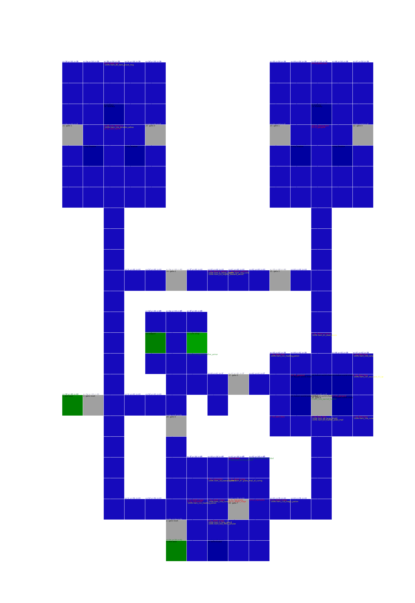
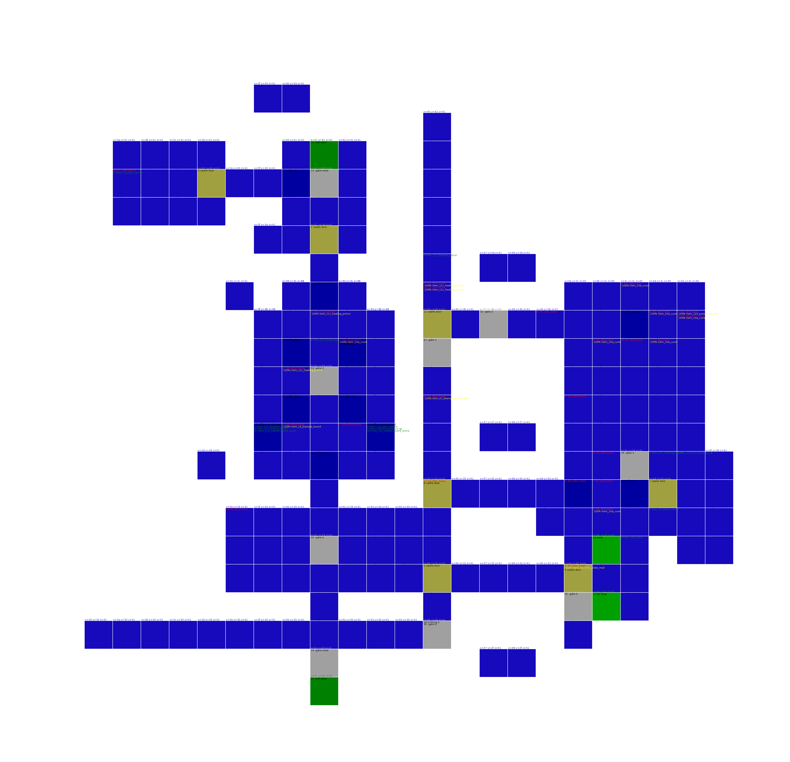

graph TD
shadow_tower_part1a[Shadow Tower Part1 A] -- Tower Top --> death_world_dark_castle_layer[Death World
Dark Castle Layer 1]
shadow_tower_part1b[Shadow Tower Part1 B] -- Edge --> illusion_world_gloomy_domain[Illusion World
Gloomy Domain 3]
shadow_tower_part1c[Shadow Tower Part1 C] -- Top --> human_world_cursed_region[Human World
Cursed Region 5]
shadow_tower_part1b[Shadow Tower Part1 B] -- Middle --> human_world_hidden_region[Human World
Hidden Region 2]
shadow_tower_part1c[Shadow Tower Part1 C] -- Edge --> death_world_undead_layer[Death World
Undead Layer 3]
shadow_tower_part1c[Shadow Tower Part1 C] -- Middle --> human_world_solitary_region[Human World
Solitary Region 5]
death_world_dark_castle_layer[Death World
Dark Castle Layer 1] -- Prison --> shadow_tower_part1a[Shadow Tower Part1 A]
death_world_dark_castle_layer[Death World
Dark Castle Layer 1] -- Entrance --> death_world_lingering_curse_layer[Death World
Lingering Curse Layer 2]
death_world_dark_castle_layer[Death World
Dark Castle Layer 1] -- Lower totem 1 --> death_world_gate_of_the_dead[Death World
Gate Of The Dead 2]
death_world_dark_castle_layer[Death World
Dark Castle Layer 1] -- Lower totem 2 --> water_world_white_rain_area[Water World
White Rain Area 2]
death_world_dark_castle_layer[Death World
Dark Castle Layer 1] -- Upper totem --> human_world_hidden_region[Human World
Hidden Region 2]
human_world_hidden_region[Human World
Hidden Region 2] -- Jail --> shadow_tower_part1b[Shadow Tower Part1 B]
human_world_hidden_region[Human World
Hidden Region 2] -- Corridor --> death_world_undead_layer[Death World
Undead Layer 3]
human_world_hidden_region[Human World
Hidden Region 2] -- Totem --> death_world_dark_castle_layer[Death World
Dark Castle Layer 1]
water_world_white_rain_area[Water World
White Rain Area 2] -- Entrance --> illusion_world_bewilderment_domain[Illusion World
Bewilderment Domain 3]
water_world_white_rain_area[Water World
White Rain Area 2] -- Totem --> death_world_dark_castle_layer[Death World
Dark Castle Layer 1]
death_world_lingering_curse_layer[Death World
Lingering Curse Layer 2] -- Door --> death_world_dark_castle_layer[Death World
Dark Castle Layer 1]
death_world_lingering_curse_layer[Death World
Lingering Curse Layer 2] -- Box room --> illusion_world_gloomy_domain[Illusion World
Gloomy Domain 3]
death_world_gate_of_the_dead[Death World
Gate Of The Dead 2] -- Entrance --> water_world_watery_labyrinth_area[Water World
Watery Labyrinth Area 3]
death_world_gate_of_the_dead[Death World
Gate Of The Dead 2] -- Totem --> death_world_dark_castle_layer[Death World
Dark Castle Layer 1]
water_world_watery_labyrinth_area[Water World
Watery Labyrinth Area 3] -- Entrance --> illusion_world_gloomy_domain[Illusion World
Gloomy Domain 3]
water_world_watery_labyrinth_area[Water World
Watery Labyrinth Area 3] -- Exit --> death_world_gate_of_the_dead[Death World
Gate Of The Dead 2]
illusion_world_bewilderment_domain[Illusion World
Bewilderment Domain 3] -- Exit --> water_world_white_rain_area[Water World
White Rain Area 2]
illusion_world_bewilderment_domain[Illusion World
Bewilderment Domain 3] -- Entrance --> shadow_tower_part2b[Shadow Tower Part2 B 6]
illusion_world_gloomy_domain[Illusion World
Gloomy Domain 3] -- Entrance --> water_world_watery_labyrinth_area[Water World
Watery Labyrinth Area 3]
illusion_world_gloomy_domain[Illusion World
Gloomy Domain 3] -- Ladder down --> shadow_tower_part1b[Shadow Tower Part1 B]
illusion_world_gloomy_domain[Illusion World
Gloomy Domain 3] -- Totem --> death_world_lingering_curse_layer[Death World
Lingering Curse Layer 2]
death_world_undead_layer[Death World
Undead Layer 3] -- King's room --> human_world_hidden_region[Human World
Hidden Region 2]
death_world_undead_layer[Death World
Undead Layer 3] -- Entrance --> shadow_tower_part1c[Shadow Tower Part1 C]
human_world_solitary_region[Human World
Solitary Region 5] -- Skeleton --> water_world_impure_pool_area[Water World
Impure Pool Area 7]
human_world_solitary_region[Human World
Solitary Region 5] -- Cemetery --> shadow_tower_part1c[Shadow Tower Part1 C]
human_world_solitary_region[Human World
Solitary Region 5] -- Grave --> shadow_tower_part2a[Shadow Tower Part2 A 6]
human_world_solitary_region[Human World
Solitary Region 5] -- Church --> human_world_forgotten_region[Human World
Forgotten Region 6]
human_world_cursed_region[Human World
Cursed Region 5] -- Entrance --> shadow_tower_part3b[Shadow Tower Part3 B 7]
human_world_cursed_region[Human World
Cursed Region 5] -- Guardian side --> shadow_tower_part1c[Shadow Tower Part1 C]
human_world_forgotten_region[Human World
Forgotten Region 6] -- Totem --> water_world_impure_pool_area[Water World
Impure Pool Area 7]
human_world_forgotten_region[Human World
Forgotten Region 6] -- Exit --> fire_world_phoenix_cave[Fire World
Phoenix Cave 7]
human_world_forgotten_region[Human World
Forgotten Region 6] -- Jump down --> human_world_solitary_region[Human World
Solitary Region 5]
human_world_forgotten_region[Human World
Forgotten Region 6] -- Drop in --> earth_world_false_pit_cavern[Earth World
False Pit Cavern 8]
shadow_tower_part2a[Shadow Tower Part2 A 6] -- Top left --> earth_world_poisonous_cavern[Earth World
Poisonous Cavern 7]
shadow_tower_part2a[Shadow Tower Part2 A 6] -- Top right --> human_world_solitary_region[Human World
Solitary Region 5]
shadow_tower_part2b[Shadow Tower Part2 B 6] -- Edge --> illusion_world_bewilderment_domain[Illusion World
Bewilderment Domain 3]
shadow_tower_part2b[Shadow Tower Part2 B 6] -- Middle --> earth_world_quaking_cavern[Earth World
Quaking Cavern 8]
shadow_tower_part2b[Shadow Tower Part2 B 6] -- Upper --> shadow_tower_part3a[Shadow Tower Part3 A 7]
earth_world_rotting_cavern[Earth World
Rotting Cavern 7] -- Entrance --> shadow_tower_part3b[Shadow Tower Part3 B 7]
earth_world_poisonous_cavern[Earth World
Poisonous Cavern 7] -- Rock guy --> earth_world_false_pit_cavern[Earth World
False Pit Cavern 8]
earth_world_poisonous_cavern[Earth World
Poisonous Cavern 7] -- Poison --> shadow_tower_part3a[Shadow Tower Part3 A 7]
earth_world_poisonous_cavern[Earth World
Poisonous Cavern 7] -- Entrance --> shadow_tower_part2a[Shadow Tower Part2 A 6]
water_world_impure_pool_area[Water World
Impure Pool Area 7] -- Entrance --> earth_world_stone_cavern[Earth World
Stone Cavern 11]
water_world_impure_pool_area[Water World
Impure Pool Area 7] -- Flush down --> human_world_solitary_region[Human World
Solitary Region 5]
water_world_impure_pool_area[Water World
Impure Pool Area 7] -- Totem --> human_world_forgotten_region[Human World
Forgotten Region 6]
fire_world_phoenix_cave[Fire World
Phoenix Cave 7] -- Entrance --> human_world_forgotten_region[Human World
Forgotten Region 6]
fire_world_phoenix_cave[Fire World
Phoenix Cave 7] -- Exit --> shadow_tower_part3b[Shadow Tower Part3 B 7]
shadow_tower_part3a[Shadow Tower Part3 A 7] -- Top line end --> shadow_tower_part2b[Shadow Tower Part2 B 6]
shadow_tower_part3a[Shadow Tower Part3 A 7] -- Top line edge --> earth_world_false_pit_cavern[Earth World
False Pit Cavern 8]
shadow_tower_part3b[Shadow Tower Part3 B 7] -- Bottom middle --> human_world_cursed_region[Human World
Cursed Region 5]
shadow_tower_part3b[Shadow Tower Part3 B 7] -- Bottem edge --> earth_world_rotting_cavern[Earth World
Rotting Cavern 7]
shadow_tower_part3a[Shadow Tower Part3 A 7] -- Top line middle --> earth_world_poisonous_cavern[Earth World
Poisonous Cavern 7]
shadow_tower_part3c[Shadow Tower Part3 C 7] -- Fence --> water_world_sunken_river_area[Water World
Sunken River Area 8]
shadow_tower_part3b[Shadow Tower Part3 B 7] -- Bottom end --> fire_world_phoenix_cave[Fire World
Phoenix Cave 7]
earth_world_quaking_cavern[Earth World
Quaking Cavern 8] -- Entrance --> shadow_tower_part2b[Shadow Tower Part2 B 6]
earth_world_false_pit_cavern[Earth World
False Pit Cavern 8] -- Bridge --> shadow_tower_part3a[Shadow Tower Part3 A 7]
earth_world_false_pit_cavern[Earth World
False Pit Cavern 8] -- Entrance --> fire_world_burning_cavern[Fire World
Burning Cavern 9]
earth_world_false_pit_cavern[Earth World
False Pit Cavern 8] -- Exit --> earth_world_poisonous_cavern[Earth World
Poisonous Cavern 7]
earth_world_false_pit_cavern[Earth World
False Pit Cavern 8] -- Jump in --> monster_world_screeching_area[Monster World
Screeching Area 9]
water_world_sunken_river_area[Water World
Sunken River Area 8] -- Entrance --> shadow_tower_part3c[Shadow Tower Part3 C 7]
water_world_sunken_river_area[Water World
Sunken River Area 8] -- Pool --> monster_world_screeching_area[Monster World
Screeching Area 9]
fire_world_burning_cavern[Fire World
Burning Cavern 9] -- Entrance --> earth_world_false_pit_cavern[Earth World
False Pit Cavern 8]
fire_world_burning_cavern[Fire World
Burning Cavern 9] -- Room --> fire_world_ashen_cavern[Fire World
Ashen Cavern 10]
fire_world_burning_cavern[Fire World
Burning Cavern 9] -- Platform --> illusion_world_worship_domain[Illusion World
Worship Domain 10]
monster_world_screeching_area[Monster World
Screeching Area 9] -- Entrance --> water_world_sunken_river_area[Water World
Sunken River Area 8]
monster_world_screeching_area[Monster World
Screeching Area 9] -- Totem --> monster_world_false_eye_area[Monster World
False Eye Area 10]
monster_world_screeching_area[Monster World
Screeching Area 9] -- Necron --> earth_world_false_pit_cavern[Earth World
False Pit Cavern 8]
fire_world_ashen_cavern[Fire World
Ashen Cavern 10] -- Start --> fire_world_molten_cavern[Fire World
Molten Cavern 11]
fire_world_ashen_cavern[Fire World
Ashen Cavern 10] -- Cerberus --> fire_world_burning_cavern[Fire World
Burning Cavern 9]
monster_world_false_eye_area[Monster World
False Eye Area 10] -- Entrance --> earth_world_stone_cavern[Earth World
Stone Cavern 11]
monster_world_false_eye_area[Monster World
False Eye Area 10] -- Totem --> monster_world_screeching_area[Monster World
Screeching Area 9]
illusion_world_worship_domain[Illusion World
Worship Domain 10] -- Entrance --> earth_world_hostile_rock_cavern[Earth World
Hostile Rock Cavern 11]
illusion_world_worship_domain[Illusion World
Worship Domain 10] -- Rooms connection --> illusion_world_dream_domain[Illusion World
Dream Domain 11]
illusion_world_worship_domain[Illusion World
Worship Domain 10] -- Boss connection --> fire_world_burning_cavern[Fire World
Burning Cavern 9]
illusion_world_worship_domain[Illusion World
Worship Domain 10] -- Exit --> fire_world_molten_cavern[Fire World
Molten Cavern 11]
earth_world_stone_cavern[Earth World
Stone Cavern 11] -- Entrance --> monster_world_false_eye_area[Monster World
False Eye Area 10]
earth_world_stone_cavern[Earth World
Stone Cavern 11] -- Exit --> water_world_impure_pool_area[Water World
Impure Pool Area 7]
earth_world_hostile_rock_cavern[Earth World
Hostile Rock Cavern 11] -- Entrance --> illusion_world_worship_domain[Illusion World
Worship Domain 10]
earth_world_hostile_rock_cavern[Earth World
Hostile Rock Cavern 11] -- Boss room --> illusion_world_dream_domain[Illusion World
Dream Domain 11]
fire_world_molten_cavern[Fire World
Molten Cavern 11] -- Platform --> illusion_world_worship_domain[Illusion World
Worship Domain 10]
fire_world_molten_cavern[Fire World
Molten Cavern 11] -- Abraxus --> fire_world_ashen_cavern[Fire World
Ashen Cavern 10]
illusion_world_dream_domain[Illusion World
Dream Domain 11] -- Entrance --> illusion_world_worship_domain[Illusion World
Worship Domain 10]
illusion_world_dream_domain[Illusion World
Dream Domain 11] -- Totem --> earth_world_hostile_rock_cavern[Earth World
Hostile Rock Cavern 11]
Human World
human_world_solitary_region
Item Memory used 16
Creatures score 65
0 100% 0x20 0a_skeleton pw55 34 91 45 73 87 60 41 a15 a14 m0 a10 a11 a13
100% item_11c_healing_potion
1 100% 0x20 0a_skeleton pw55 34 91 45 73 87 60 41 a15 a14 m0 a10 a11 a13
100% item_11e_anti_venom
2 100% 0x25 09_blood_slime pw52 54 40 43 101 343 97 103 a5 a4 m0 a13 a12 a16
3 100% 0x35 01_acid_slime pw44 52 36 26 70 80 300 47 a3 a2 m0 a9 a10 a20 a11 a13 a28
100% item_12b_pitcher_of_nadya
4 100% 0x35 01_acid_slime pw44 52 36 26 70 80 300 47 a3 a2 m0 a9 a10 a20 a11 a13 a28
5 100% 0x35 01_acid_slime pw44 52 36 26 70 80 300 47 a3 a2 m0 a9 a10 a20 a11 a13 a28
100% item_11f_anti_paralytic
6 100% 0x35 01_acid_slime pw44 52 36 26 70 80 300 47 a3 a2 m0 a9 a10 a20 a11 a13 a28
100% item_f0_guardian_bracelet
7 100% 0x35 01_acid_slime pw44 52 36 26 70 80 300 47 a3 a2 m0 a9 a10 a20 a11 a13 a28
100% item_126_bottle_of_light
8 100% 0x20 0a_skeleton pw55 34 91 45 73 87 60 41 a15 a14 m0 a10 a11 a13
100% item_118_iron_key
9 100% 0x35 01_acid_slime pw44 52 36 26 70 80 300 47 a3 a2 m0 a9 a10 a20 a11 a13 a28
100% item_11c_healing_potion
a 100% 0x35 01_acid_slime pw44 52 36 26 70 80 300 47 a3 a2 m0 a9 a10 a20 a11 a13 a28
100% item_ce_soul_ring
b 100% 0x35 02_parasite pw77 28 62 31 75 76 61 26 a12 a12 m0 a83 a35 a20
c 100% 0x20 09_shadow_spider pw57 78 28 62 70 73 66 40 a12 a13 m0
100% item_10e_sacred_feather
d 100% 0x20 09_shadow_spider pw57 78 28 62 70 73 66 40 a12 a13 m0
100% item_5_long_sword
e 100% 0x90 04_acid_slime pw44 52 36 26 70 80 300 47 a3 a2 m0 a9 a10 a20 a11 a13 a28
100% item_120_divine_symbol
f 100% 0x35 02_parasite pw77 28 62 31 75 76 61 26 a12 a12 m0 a83 a35 a20
10 100% 0x90 04_acid_slime pw44 52 36 26 70 80 300 47 a3 a2 m0 a9 a10 a20 a11 a13 a28
100% item_b_lethal_rapier
11 100% 0x90 04_acid_slime pw44 52 36 26 70 80 300 47 a3 a2 m0 a9 a10 a20 a11 a13 a28
100% item_11c_healing_potion
12 100% 0x90 04_acid_slime pw44 52 36 26 70 80 300 47 a3 a2 m0 a9 a10 a20 a11 a13 a28
100% item_12f_spirit_key
20 100% 0x0 02_parasite pw77 28 62 31 75 76 61 26 a12 a12 m0 a83 a35 a20
100% item_10a_cune
0 item_11c_healing_potion
1 item_11e_anti_venom
2 item_11c_healing_potion
3 item_ef_deadly_bracelet
4 item_128_spirit_book
5 item_11c_healing_potion
7 item_136_soul_pod_5_sp
8 item_11c_healing_potion
9 item_120_divine_symbol

human_world_hidden_region
Item Memory used 16
Creatures score 198
0 100% 0x50 08_casket pw70 80 90 349 362 485 285 331 a20 a25 m0 a10 a11 a13
100% item_6d_shining_plate_mail
1 100% 0x50 08_casket pw70 80 90 349 362 485 285 331 a20 a25 m0 a10 a11 a13
100% item_11c_healing_potion
2 100% 0x20 08_casket pw70 80 90 349 362 485 285 331 a20 a25 m0 a10 a11 a13
100% item_2c_deadly_great_sword
3 100% 0x20 00_dark_spider pw50 38 58 55 50 57 47 72 a8 a8 m0 a13 a12 a16
4 100% 0x50 06_fanged_worm pw48 70 51 65 40 102 88 72 a14 a15 m0 a24 a63 a23
100% item_11c_healing_potion
5 100% 0x20 01_blood_slime pw52 54 40 43 101 343 97 103 a5 a4 m0 a10 a11 a13
100% item_e1_ring_of_dark_souls
6 100% 0x20 00_acid_slime pw44 52 36 26 70 80 300 47 a3 a2 m0 a13 a12 a16
100% item_126_bottle_of_light
7 100% 0x20 01_blood_slime pw52 54 40 43 101 343 97 103 a5 a4 m0 a10 a11 a13
8 100% 0x20 01_blood_slime pw52 54 40 43 101 343 97 103 a5 a4 m0 a10 a11 a13
100% item_111_kings_key
9 100% 0x20 01_blood_slime pw52 54 40 43 101 343 97 103 a5 a4 m0 a10 a11 a13
100% item_139_soul_pod_14_sp
a 100% 0x20 01_blood_slime pw52 54 40 43 101 343 97 103 a5 a4 m0 a10 a11 a13
b 100% 0x20 00_acid_slime pw44 52 36 26 70 80 300 47 a3 a2 m0 a13 a12 a16
100% item_120_divine_symbol
c 100% 0x50 05_blood_slime pw52 54 40 43 101 343 97 103 a5 a4 m0
d 100% 0x50 05_blood_slime pw52 54 40 43 101 343 97 103 a5 a4 m0
e 100% 0x20 08_dark_spider pw50 38 58 55 50 57 47 72 a8 a8 m0 a13 a12 a16
f 100% 0x20 08_dark_spider pw50 38 58 55 50 57 47 72 a8 a8 m0 a13 a12 a16
10 100% 0x20 08_dark_spider pw50 38 58 55 50 57 47 72 a8 a8 m0 a13 a12 a16
11 100% 0x20 08_dark_spider pw50 38 58 55 50 57 47 72 a8 a8 m0 a13 a12 a16
20 100% 0x50 05_blood_skull pw53 56 35 42 75 300 90 50 a11 a9 m0 a78 a86 a89 a78 a76 a82
0 item_dd_caustic_priest_ring
1 item_10c_torch
2 item_e3_ring_of_seal
3 item_e2_black_ring
4 item_11d_magic_potion
5 item_127_acid_vaccine
6 item_d0_holy_ring_of_resist
7 item_ee_mighty_ring
8 item_42_bow
9 item_b6_caustic_tower_shield
a item_ae_shining_great_shield
b item_125_dust_of_rage
c item_11d_magic_potion
d item_11c_healing_potion

human_world_forgotten_region
Item Memory used 16
Creatures score 48
0 100% 0x30 06_tongue_imp pw52 35 70 35 65 90 75 28 a12 a15 m0 a83 a35 a20
1 100% 0x30 06_tongue_imp pw52 35 70 35 65 90 75 28 a12 a15 m0 a83 a35 a20
100% item_de_caustic_sorcerer_ring
2 100% 0x30 06_tongue_imp pw52 35 70 35 65 90 75 28 a12 a15 m0 a83 a35 a20
3 100% 0x30 06_tongue_imp pw52 35 70 35 65 90 75 28 a12 a15 m0 a83 a35 a20
4 100% 0x30 06_tongue_imp pw52 35 70 35 65 90 75 28 a12 a15 m0 a83 a35 a20
100% item_128_spirit_book
5 100% 0x30 02_tongue_imp pw52 35 70 35 65 90 75 28 a12 a15 m0 a16 a16 a23
6 100% 0x30 02_tongue_imp pw52 35 70 35 65 90 75 28 a12 a15 m0 a16 a16 a23
100% item_5d_leather_armor
7 100% 0x30 02_tongue_imp pw52 35 70 35 65 90 75 28 a12 a15 m0 a16 a16 a23
8 100% 0x30 02_tongue_imp pw52 35 70 35 65 90 75 28 a12 a15 m0 a16 a16 a23
9 100% 0x30 01_blood_skull pw53 56 35 42 75 300 90 50 a11 a9 m0 a15 a13 a21
100% item_10a_cune
a 100% 0x30 02_tongue_imp pw52 35 70 35 65 90 75 28 a12 a15 m0 a16 a16 a23
100% item_12d_pitcher_of_nadya_mp
b 100% 0x30 01_blood_skull pw53 56 35 42 75 300 90 50 a11 a9 m0 a15 a13 a21
100% item_12e_dorados_ashes
c 100% 0x30 01_blood_skull pw53 56 35 42 75 300 90 50 a11 a9 m0 a15 a13 a21
d 100% 0x30 01_blood_skull pw53 56 35 42 75 300 90 50 a11 a9 m0 a15 a13 a21
100% item_11c_healing_potion
e 100% 0x30 08_dark_spider pw50 38 58 55 50 57 47 72 a8 a8 m0 a15 a13 a21
f 100% 0x30 08_dark_spider pw50 38 58 55 50 57 47 72 a8 a8 m0 a15 a13 a21
100% item_10e_sacred_feather
10 100% 0x30 08_dark_spider pw50 38 58 55 50 57 47 72 a8 a8 m0 a15 a13 a21
11 100% 0x30 08_dark_spider pw50 38 58 55 50 57 47 72 a8 a8 m0 a15 a13 a21
100% item_123_fire_world_stone
12 100% 0x30 08_dark_spider pw50 38 58 55 50 57 47 72 a8 a8 m0 a15 a13 a21
100% item_33_crushing_mace
13 100% 0x30 08_dark_spider pw50 38 58 55 50 57 47 72 a8 a8 m0 a15 a13 a21
0 item_12e_dorados_ashes
1 item_116_key_of_delusion
2 item_bb_gothic_shield
3 item_10a_cune
4 item_136_soul_pod_5_sp
5 item_11c_healing_potion
6 item_12e_dorados_ashes
7 item_124_poison_vaccine
8 item_125_dust_of_rage
9 item_128_spirit_book
a item_10d_lamp

human_world_cursed_region
Item Memory used 16
Creatures score 82
0 100% 0x30 00_acid_skull pw55 60 38 48 89 85 300 61 a12 a10 m0
100% item_a6_large_shield
1 100% 0x30 00_acid_skull pw55 60 38 48 89 85 300 61 a12 a10 m0
100% item_10e_sacred_feather
2 100% 0x35 02_blood_slime pw52 54 40 43 101 343 97 103 a5 a4 m0 a9 a10 a20 a11 a13 a28
100% item_f_broad_sword
3 100% 0x35 02_blood_slime pw52 54 40 43 101 343 97 103 a5 a4 m0 a9 a10 a20 a11 a13 a28
100% item_c3_holy_gothic_shield
4 100% 0x30 01_shadow_spider pw57 78 28 62 70 73 66 40 a12 a13 m0 a3 a61 a2
100% item_7c_wooden_glove
5 100% 0x35 02_blood_slime pw52 54 40 43 101 343 97 103 a5 a4 m0 a9 a10 a20 a11 a13 a28
100% item_73_full_plate
6 100% 0x35 02_blood_slime pw52 54 40 43 101 343 97 103 a5 a4 m0 a9 a10 a20 a11 a13 a28
100% item_82_caustic_hand_guard
7 100% 0x35 02_blood_slime pw52 54 40 43 101 343 97 103 a5 a4 m0 a9 a10 a20 a11 a13 a28
100% item_123_fire_world_stone
8 100% 0x35 02_blood_slime pw52 54 40 43 101 343 97 103 a5 a4 m0 a9 a10 a20 a11 a13 a28
100% item_11f_anti_paralytic
9 100% 0x30 00_dark_spider pw50 38 58 55 50 57 47 72 a8 a8 m0
a 100% 0x30 00_dark_spider pw50 38 58 55 50 57 47 72 a8 a8 m0
b 100% 0x30 02_skeleton pw55 34 91 45 73 87 60 41 a15 a14 m0 a9 a10 a20 a11 a13 a28
c 100% 0x30 02_skeleton pw55 34 91 45 73 87 60 41 a15 a14 m0 a9 a10 a20 a11 a13 a28
d 100% 0x30 09_demon_bat pw50 68 46 63 80 48 46 83 a14 a20 m0 a3 a61 a2
e 100% 0x30 02_skeleton pw55 34 91 45 73 87 60 41 a15 a14 m0 a9 a10 a20 a11 a13 a28
f 100% 0x80 09_demon_bat pw50 68 46 63 80 48 46 83 a14 a20 m0 a3 a61 a2
10 100% 0x10 09_demon_bat pw50 68 46 63 80 48 46 83 a14 a20 m0 a3 a61 a2
21 100% 0x50 0a_guardian_a pw80 42 103 89 110 93 72 36 a15 a16 m0 a30 a33 a91
30 100% 0x30 04_fat_mole_a pw0 0 0 0 0 0 0 0 a0 a0 m0
0 item_10c_torch
1 item_4a_crown_of_composure
2 item_126_bottle_of_light
3 item_11e_anti_venom
4 item_136_soul_pod_5_sp
5 item_10e_sacred_feather
6 item_11c_healing_potion
7 item_125_dust_of_rage

Earth World
earth_world_rotting_cavern
Item Memory used 16
Creatures score 45
0 100% 0x30 0e_elder pw59 62 85 10 20 36 35 20 a14 a14 m0 a58 a45 a125
100% item_11f_anti_paralytic
1 100% 0x20 05_hobble_worm pw60 85 55 46 45 36 25 46 a25 a20 m0 a42 a65 a40
100% item_10d_lamp
2 100% 0x20 05_hobble_worm pw60 85 55 46 45 36 25 46 a25 a20 m0 a42 a65 a40
100% item_124_poison_vaccine
3 100% 0x20 05_hobble_worm pw60 85 55 46 45 36 25 46 a25 a20 m0 a42 a65 a40
100% item_10a_cune
4 100% 0x30 01_earth_knight pw78 76 72 140 70 56 156 65 a30 a26 m0 a62 a95 a50
100% item_7e_metal_glove
5 100% 0x30 01_earth_knight pw78 76 72 140 70 56 156 65 a30 a26 m0 a62 a95 a50
100% item_10c_torch
6 100% 0x30 01_earth_knight pw78 76 72 140 70 56 156 65 a30 a26 m0 a62 a95 a50
100% item_4_long_sword
7 100% 0x20 05_hobble_worm pw60 85 55 46 45 36 25 46 a25 a20 m0 a42 a65 a40
8 100% 0x40 02_elder pw59 62 85 10 20 36 35 20 a14 a14 m0 a58 a45 a125
100% item_10a_cune
9 100% 0x40 02_elder pw59 62 85 10 20 36 35 20 a14 a14 m0 a58 a45 a125
100% item_c2_shinning_gothic_shield
a 100% 0x35 0c_barrel_snail pw68 42 53 30 20 90 50 56 a8 a7 m0 a45 a90 a26
100% item_7a_leather_glove
b 100% 0x35 0c_barrel_snail pw68 42 53 30 20 90 50 56 a8 a7 m0 a45 a90 a26
100% item_af_dark_great_shield
c 100% 0x35 0c_barrel_snail pw68 42 53 30 20 90 50 56 a8 a7 m0 a45 a90 a26
d 100% 0x20 05_dwarfling pw50 50 52 50 78 45 56 45 a12 a12 m6
e 100% 0x20 05_dwarfling pw50 50 52 50 78 45 56 45 a12 a12 m6
100% item_71_devil_plate_mail
f 100% 0x20 05_dwarfling pw50 50 52 50 78 45 56 45 a12 a12 m6
100% item_bf_master_gothic_shield
10 100% 0x20 05_dwarfling pw50 50 52 50 78 45 56 45 a12 a12 m6
11 100% 0x20 05_dwarfling pw50 50 52 50 78 45 56 45 a12 a12 m6
100% item_11c_healing_potion
12 100% 0x25 00_earth_knight pw78 76 72 140 70 56 156 65 a30 a26 m0 a65 a79 a62
13 100% 0x25 00_earth_knight pw78 76 72 140 70 56 156 65 a30 a26 m0 a65 a79 a62
100% item_ca_summoner_ring_of_frost
14 100% 0x25 00_earth_knight pw78 76 72 140 70 56 156 65 a30 a26 m0 a65 a79 a62
15 100% 0x10 0a_barrel_snail pw80 70 110 50 60 95 82 70 a23 a20 m0 a36 a121 a42
16 100% 0x10 0a_barrel_snail pw80 70 110 50 60 95 82 70 a23 a20 m0 a36 a121 a42
17 100% 0x10 0a_barrel_snail pw80 70 110 50 60 95 82 70 a23 a20 m0 a36 a121 a42
18 100% 0x10 0a_barrel_snail pw80 70 110 50 60 95 82 70 a23 a20 m0 a36 a121 a42
19 100% 0x20 04_minor_dwarf pw50 66 52 20 30 50 72 26 a12 a12 m0
1a 100% 0x20 04_minor_dwarf pw50 66 52 20 30 50 72 26 a12 a12 m0
1b 100% 0x60 06_elder pw59 62 85 10 20 36 35 20 a14 a14 m0 a58 a45 a125
1c 100% 0x30 06_elder pw59 62 85 10 20 36 35 20 a14 a14 m0 a58 a45 a125
1d 100% 0x30 06_elder pw59 62 85 10 20 36 35 20 a14 a14 m0 a58 a45 a125
1e 100% 0x30 06_elder pw59 62 85 10 20 36 35 20 a14 a14 m0 a58 a45 a125
20 100% 0x10 0d_cocoon_plant pw50 70 80 20 120 80 90 40 a12 a12 m0
30 100% 0x20 0a_blank pw0 0 0 0 0 0 0 0 a0 a0 m5
0 item_11c_healing_potion
1 item_124_poison_vaccine
2 item_10a_cune
3 item_44_bow_gun
4 item_10a_cune
5 item_109_endless_amulet
6 item_20_shining_bastard_sword
7 item_10c_torch

earth_world_poisonous_cavern
Item Memory used 16
Creatures score 67
0 100% 0x15 08_trickster pw53 67 92 20 30 14 18 26 a12 a10 m0 a42 a65 a40
1 100% 0x15 08_trickster pw53 67 92 20 30 14 18 26 a12 a10 m0 a42 a65 a40
100% item_12e_dorados_ashes
2 100% 0x15 08_trickster pw53 67 92 20 30 14 18 26 a12 a10 m0 a42 a65 a40
3 100% 0x15 0c_ray_plant pw105 45 80 80 90 70 50 46 a16 a15 m0 a50 a65 a90
100% item_12e_dorados_ashes
4 100% 0x15 0c_ray_plant pw105 45 80 80 90 70 50 46 a16 a15 m0 a50 a65 a90
5 100% 0x15 0c_ray_plant pw105 45 80 80 90 70 50 46 a16 a15 m0 a50 a65 a90
6 100% 0x15 0c_ray_plant pw105 45 80 80 90 70 50 46 a16 a15 m0 a50 a65 a90
100% item_7b_leather_glove
7 100% 0x15 08_trickster pw53 67 92 20 30 14 18 26 a12 a10 m0 a42 a65 a40
100% item_f9_king_bracelet
8 100% 0x15 08_trickster pw53 67 92 20 30 14 18 26 a12 a10 m0 a42 a65 a40
9 100% 0x15 08_trickster pw53 67 92 20 30 14 18 26 a12 a10 m0 a42 a65 a40
100% item_a9_large_shield_of_balance
a 100% 0x15 08_trickster pw53 67 92 20 30 14 18 26 a12 a10 m0 a42 a65 a40
100% item_10a_cune
b 100% 0x50 0e_watcher_plant pw30 52 54 10 20 32 30 40 a12 a12 m0 a64 a40 a101 a64 a40 a131
c 100% 0x60 0e_watcher_plant pw30 52 54 10 20 32 30 40 a12 a12 m0 a64 a40 a101 a64 a40 a131
d 100% 0x40 00_black_onyx pw70 40 80 320 345 336 445 520 a26 a28 m0
100% item_18_bastard_sword
e 100% 0x40 00_black_onyx pw70 40 80 320 345 336 445 520 a26 a28 m0
100% item_127_acid_vaccine
f 100% 0x40 00_black_onyx pw70 40 80 320 345 336 445 520 a26 a28 m0
100% item_d5_dark_priest_ring
10 100% 0x15 0c_hanging_dead pw50 32 63 10 42 30 35 32 a5 a5 m0
11 100% 0x15 0c_hanging_dead pw50 32 63 10 42 30 35 32 a5 a5 m0
12 100% 0x15 0c_hanging_dead pw50 32 63 10 42 30 35 32 a5 a5 m0
13 100% 0x15 0c_hanging_dead pw50 32 63 10 42 30 35 32 a5 a5 m0
14 100% 0x15 0c_hanging_dead pw50 32 63 10 42 30 35 32 a5 a5 m0
15 100% 0x15 0c_hanging_dead pw50 32 63 10 42 30 35 32 a5 a5 m0
16 100% 0x20 01_acid_pod pw50 70 80 20 120 80 90 40 a12 a12 m0 a42 a65 a40
17 100% 0x20 01_acid_pod pw50 70 80 20 120 80 90 40 a12 a12 m0 a42 a65 a40
18 100% 0x20 01_acid_pod pw50 70 80 20 120 80 90 40 a12 a12 m0 a42 a65 a40
19 100% 0x30 0d_trickster pw78 105 54 86 72 46 90 46 a15 a18 m0 a50 a80 a120
1a 100% 0x30 0d_trickster pw78 105 54 86 72 46 90 46 a15 a18 m0 a50 a80 a120
1b 100% 0x30 0d_trickster pw78 105 54 86 72 46 90 46 a15 a18 m0 a50 a80 a120
1d 100% 0x20 08_trickster pw53 67 92 20 30 14 18 26 a12 a10 m0 a42 a65 a40
1e 100% 0x30 0d_trickster pw78 105 54 86 72 46 90 46 a15 a18 m0 a50 a80 a120
1f 100% 0x30 0d_trickster pw78 105 54 86 72 46 90 46 a15 a18 m0 a50 a80 a120
20 100% 0x10 00_duhrin pw65 124 92 80 70 86 58 30 a0 a0 m8
30 100% 0x20 05_blank pw0 0 0 0 0 0 0 0 a0 a0 m0
31 100% 0x70 04_auriel_b pw150 160 150 65 65 65 65 65 a75 a70 m9
32 100% 0x50 0b_blank pw0 0 0 0 0 0 0 0 a0 a0 m0
33 100% 0x50 0a_blank pw0 0 0 0 0 0 0 0 a0 a0 m7
0 item_3a_giant_axe
1 item_11f_anti_paralytic
2 item_128_spirit_book
3 item_c0_gothic_shield_of_power
5 item_11f_anti_paralytic
6 item_10d_lamp
7 item_11c_healing_potion
8 item_11c_healing_potion
a item_11c_healing_potion
b item_50_full_helm
1c item_12e_dorados_ashes
1d item_11e_anti_venom

earth_world_stone_cavern
Item Memory used 16
Creatures score 53
0 100% 0x60 01_demon_bat pw50 68 46 63 80 48 46 83 a14 a20 m0
100% item_138_soul_pod_29_sp
1 100% 0x50 01_demon_bat pw50 68 46 63 80 48 46 83 a14 a20 m0
100% item_9d_frosty_leg_guard
2 100% 0x50 01_demon_bat pw50 68 46 63 80 48 46 83 a14 a20 m0
3 100% 0x30 04_kiljoy pw40 60 100 50 60 45 46 46 a20 a20 m0 a90 a152 a78
100% item_90_steel_boots
4 100% 0x30 04_kiljoy pw40 60 100 50 60 45 46 46 a20 a20 m0 a90 a152 a78
100% item_3f_battle_axe
5 100% 0x30 04_kiljoy pw40 60 100 50 60 45 46 46 a20 a20 m0 a90 a152 a78
100% item_10a_cune
6 100% 0x30 04_kiljoy pw40 60 100 50 60 45 46 46 a20 a20 m0 a90 a152 a78
100% item_ab_great_shield
7 100% 0x30 04_kiljoy pw40 60 100 50 60 45 46 46 a20 a20 m0 a90 a152 a78
100% item_11c_healing_potion
8 100% 0x30 04_kiljoy pw40 60 100 50 60 45 46 46 a20 a20 m0 a90 a152 a78
9 100% 0x30 04_kiljoy pw40 60 100 50 60 45 46 46 a20 a20 m0 a90 a152 a78
100% item_89_arm_guard
a 100% 0x40 09_dwarf_warrior pw93 85 32 46 48 68 75 63 a15 a15 m0 a93 a60 a155 a130 a80 a65
100% item_fe_deadly_amulet
b 100% 0x40 09_dwarf_warrior pw93 85 32 46 48 68 75 63 a15 a15 m0 a93 a60 a155 a130 a80 a65
100% item_ad_great_shield_of_balance
c 100% 0x25 01_beak_plant pw30 60 72 10 46 41 38 42 a15 a15 m0 a102 a275 a96 a128 a196 a86
d 100% 0x25 01_beak_plant pw30 60 72 10 46 41 38 42 a15 a15 m0 a102 a275 a96 a128 a196 a86
e 100% 0x25 01_beak_plant pw30 60 72 10 46 41 38 42 a15 a15 m0 a102 a275 a96 a128 a196 a86
100% item_11e_anti_venom
f 100% 0x25 01_beak_plant pw30 60 72 10 46 41 38 42 a15 a15 m0 a102 a275 a96 a128 a196 a86
100% item_136_soul_pod_5_sp
10 100% 0x40 09_dwarf_warrior pw93 85 32 46 48 68 75 63 a15 a15 m0 a93 a60 a155 a130 a80 a65
100% item_37_frosty_morning_star
11 100% 0x40 09_dwarf_warrior pw93 85 32 46 48 68 75 63 a15 a15 m0 a93 a60 a155 a130 a80 a65
100% item_11c_healing_potion
12 100% 0x40 09_dwarf_warrior pw93 85 32 46 48 68 75 63 a15 a15 m0 a93 a60 a155 a130 a80 a65
13 100% 0x25 0c_dybbuk pw65 60 42 80 80 78 76 68 a12 a14 m10
14 100% 0x20 05_earth_knight pw78 76 72 140 70 56 156 65 a30 a26 m0
15 100% 0x20 05_earth_knight pw78 76 72 140 70 56 156 65 a30 a26 m0
100% item_100_amulet_of_curing
16 100% 0x20 05_earth_knight pw78 76 72 140 70 56 156 65 a30 a26 m0
100% item_10a_cune
17 100% 0x80 05_earth_knight pw78 76 72 140 70 56 156 65 a30 a26 m0
100% item_10a_cune
30 100% 0x50 00_dybbuk pw60 70 40 80 80 78 76 68 a12 a14 m10
100% item_10a_cune
31 100% 0x0 04_dybbuk pw60 70 40 80 80 78 76 68 a12 a14 m10
100% item_54_fiery_full_helm
32 100% 0x0 04_dybbuk pw60 70 40 80 80 78 76 68 a12 a14 m10
0 item_11c_healing_potion
1 item_136_soul_pod_5_sp
2 item_13_broad_sword
3 item_10e_sacred_feather
4 item_10a_cune
5 item_11d_magic_potion
6 item_11c_healing_potion
7 item_11c_healing_potion

earth_world_quaking_cavern
Item Memory used 16
Creatures score 46
0 100% 0x30 00_watcher_plant pw30 52 54 10 20 32 30 40 a12 a12 m0
1 100% 0x30 00_watcher_plant pw30 52 54 10 20 32 30 40 a12 a12 m0
100% item_a2_buckler
2 100% 0x30 00_watcher_plant pw30 52 54 10 20 32 30 40 a12 a12 m0
3 100% 0x30 00_watcher_plant pw30 52 54 10 20 32 30 40 a12 a12 m0
100% item_10a_cune
4 100% 0x30 00_watcher_plant pw30 52 54 10 20 32 30 40 a12 a12 m0
5 100% 0x30 00_watcher_plant pw30 52 54 10 20 32 30 40 a12 a12 m0
100% item_7_fiery_long_sword
6 100% 0x60 08_star_serpent pw42 65 45 40 60 52 53 63 a15 a15 m0
100% item_10a_cune
7 100% 0x10 08_star_serpent pw42 65 45 40 60 52 53 63 a15 a15 m0
100% item_120_divine_symbol
8 100% 0x10 08_star_serpent pw42 65 45 40 60 52 53 63 a15 a15 m0
100% item_6_keenest_long_sword
9 100% 0x10 08_star_serpent pw42 65 45 40 60 52 53 63 a15 a15 m0
a 100% 0x10 08_star_serpent pw42 65 45 40 60 52 53 63 a15 a15 m0
b 100% 0x90 04_cannon_snail pw62 100 51 41 45 46 95 75 a20 a17 m0
100% item_123_fire_world_stone
c 100% 0x35 0d_tondrom pw135 102 210 70 45 66 30 35 a15 a14 m0 a180 a59 a112 a191 a65 a122 a201 a85 a164
100% item_6e_dark_plate_mail
d 100% 0x35 0d_tondrom pw135 102 210 70 45 66 30 35 a15 a14 m0 a180 a59 a112 a191 a65 a122 a201 a85 a164
e 100% 0x35 0d_tondrom pw135 102 210 70 45 66 30 35 a15 a14 m0 a180 a59 a112 a191 a65 a122 a201 a85 a164
f 100% 0x30 04_cannon_snail pw62 100 51 41 45 46 95 75 a20 a17 m0
100% item_5a_holy_great_helm
10 100% 0x30 04_cannon_snail pw62 100 51 41 45 46 95 75 a20 a17 m0
100% item_120_divine_symbol
11 100% 0x30 04_cannon_snail pw62 100 51 41 45 46 95 75 a20 a17 m0
12 100% 0x30 01_blue_flicker pw46 50 70 10 40 40 35 80 a8 a6 m0 a64 a50 a108
100% item_a5_shield_of_resist
13 100% 0x30 01_blue_flicker pw46 50 70 10 40 40 35 80 a8 a6 m0 a64 a50 a108
100% item_d6_dark_sorcerer_ring
14 100% 0x30 01_blue_flicker pw46 50 70 10 40 40 35 80 a8 a6 m0 a64 a50 a108
100% item_11c_healing_potion
15 100% 0x30 01_blue_flicker pw46 50 70 10 40 40 35 80 a8 a6 m0 a64 a50 a108
100% item_db_caustic_ring
16 100% 0x40 08_torg pw44 63 52 28 27 53 45 28 a30 a20 m0 a98 a200 a42
100% item_7d_wooden_glove
17 100% 0x40 08_torg pw44 63 52 28 27 53 45 28 a30 a20 m0 a98 a200 a42
18 100% 0x40 08_torg pw44 63 52 28 27 53 45 28 a30 a20 m0 a98 a200 a42
20 100% 0x10 02_sand_leech_b pw87 100 62 80 120 600 200 56 a24 a24 m0 a82 a40 a153
21 100% 0x10 02_sand_leech_b pw87 100 62 80 120 600 200 56 a24 a24 m0 a82 a40 a153
22 100% 0x10 02_sand_leech_b pw87 100 62 80 120 600 200 56 a24 a24 m0 a82 a40 a153
0 item_11c_healing_potion
1 item_11c_healing_potion
2 item_10a_cune
3 item_3b_giant_axe
4 item_c6_ring_of_fire_resist
5 item_10c_torch
6 item_10a_cune
7 item_139_soul_pod_14_sp
8 item_127_acid_vaccine
9 item_3e_living_axe

earth_world_false_pit_cavern
Item Memory used 16
Creatures score 41
0 100% 0x50 00_sand_leech_a pw30 42 50 48 50 82 45 32 a8 a7 m0 a122 a88 a62 a65 a42 a124 a45 a22 a194
100% item_126_bottle_of_light
1 100% 0x50 05_cocoon_plant pw50 70 80 20 120 80 90 40 a12 a12 m0
2 100% 0x10 05_cocoon_plant pw50 70 80 20 120 80 90 40 a12 a12 m0
100% item_137_soul_pod_53_sp
3 100% 0x10 05_cocoon_plant pw50 70 80 20 120 80 90 40 a12 a12 m0
4 100% 0x10 05_cocoon_plant pw50 70 80 20 120 80 90 40 a12 a12 m0
100% item_57_harden_great_helm
5 100% 0x10 05_cocoon_plant pw50 70 80 20 120 80 90 40 a12 a12 m0
100% item_127_acid_vaccine
6 100% 0x10 01_myconid pw43 70 42 20 26 80 26 33 a14 a13 m0
100% item_12e_dorados_ashes
7 100% 0x10 01_myconid pw43 70 42 20 26 80 26 33 a14 a13 m0
8 100% 0x10 01_myconid pw43 70 42 20 26 80 26 33 a14 a13 m0
100% item_11d_magic_potion
9 100% 0x20 09_cocoon_plant pw62 102 70 15 35 45 52 64 a15 a15 m0
100% item_d_shadow_wolf
a 100% 0x20 09_cocoon_plant pw62 102 70 15 35 45 52 64 a15 a15 m0
b 100% 0x30 08_guardian_b pw60 42 125 62 178 179 124 63 a15 a16 m0 a92 a70 a148 a92 a70 a218
c 100% 0x30 08_guardian_b pw60 42 125 62 178 179 124 63 a15 a16 m0 a92 a70 a148 a92 a70 a218
100% item_3c_crushing_axe
d 100% 0x20 0d_crying_root pw50 84 100 10 20 100 40 48 a12 a12 m0 a93 a60 a155 a130 a80 a65
100% item_123_fire_world_stone
e 100% 0x20 0d_crying_root pw50 84 100 10 20 100 40 48 a12 a12 m0 a93 a60 a155 a130 a80 a65
f 100% 0x20 0d_crying_root pw50 84 100 10 20 100 40 48 a12 a12 m0 a93 a60 a155 a130 a80 a65
100% item_12e_dorados_ashes
10 100% 0x20 0d_crying_root pw50 84 100 10 20 100 40 48 a12 a12 m0 a93 a60 a155 a130 a80 a65
100% item_11c_healing_potion
11 100% 0x50 09_sloth_bug pw80 70 110 50 60 95 82 70 a23 a20 m0
100% item_120_divine_symbol
12 100% 0x50 08_clay_servant pw132 138 75 40 50 70 48 72 a27 a26 m0
100% item_110_fiery_key
13 100% 0x10 08_clay_servant pw132 138 75 40 50 70 48 72 a27 a26 m0
14 100% 0x10 08_clay_servant pw132 138 75 40 50 70 48 72 a27 a26 m0
15 100% 0x10 08_clay_servant pw132 138 75 40 50 70 48 72 a27 a26 m0
16 100% 0x10 08_clay_servant pw132 138 75 40 50 70 48 72 a27 a26 m0
0 item_120_divine_symbol
1 item_127_acid_vaccine
2 item_126_bottle_of_light
3 item_12e_dorados_ashes
4 item_11d_magic_potion
5 item_11d_magic_potion
6 item_10e_sacred_feather
7 item_11e_anti_venom
8 item_124_poison_vaccine
9 item_11f_anti_paralytic
a item_11f_anti_paralytic
b item_11e_anti_venom
c item_11e_anti_venom
d item_139_soul_pod_14_sp

earth_world_hostile_rock_cavern
Item Memory used 11
Creatures score 30
0 100% 0x30 05_acid_pod pw50 70 80 20 120 80 90 40 a12 a12 m0 a122 a88 a62 a65 a42 a124 a45 a22 a194
100% item_10a_cune
1 100% 0x30 05_acid_pod pw50 70 80 20 120 80 90 40 a12 a12 m0 a122 a88 a62 a65 a42 a124 a45 a22 a194
100% item_ea_bracelet_of_composure
2 100% 0x30 05_acid_pod pw50 70 80 20 120 80 90 40 a12 a12 m0 a122 a88 a62 a65 a42 a124 a45 a22 a194
100% item_11c_healing_potion
3 100% 0x30 05_acid_pod pw50 70 80 20 120 80 90 40 a12 a12 m0 a122 a88 a62 a65 a42 a124 a45 a22 a194
100% item_10a_cune
4 100% 0x60 09_imp pw57 74 42 46 48 60 65 46 a10 a11 m0 a122 a88 a62 a65 a42 a124 a45 a22 a194
100% item_10a_cune
5 100% 0x60 09_imp pw57 74 42 46 48 60 65 46 a10 a11 m0 a122 a88 a62 a65 a42 a124 a45 a22 a194
100% item_6c_caustic_plate_mail
6 100% 0x30 02_watcher_plant pw30 52 54 10 20 32 30 40 a12 a12 m0 a142 a120 a90
100% item_47_cap
7 100% 0x30 02_watcher_plant pw30 52 54 10 20 32 30 40 a12 a12 m0 a142 a120 a90
8 100% 0x30 02_watcher_plant pw30 52 54 10 20 32 30 40 a12 a12 m0 a142 a120 a90
100% item_11c_healing_potion
9 100% 0x30 02_watcher_plant pw30 52 54 10 20 32 30 40 a12 a12 m0 a142 a120 a90
a 100% 0x30 02_watcher_plant pw30 52 54 10 20 32 30 40 a12 a12 m0 a142 a120 a90
100% item_9a_leg_guard
21 100% 0x10 04_dread_knight pw115 100 85 102 150 130 128 95 a45 a40 m11 a190 a145 a112 a110 a155 a245
100% item_11e_anti_venom
0 item_11c_healing_potion
1 item_98_steel_boots_of_resist
2 item_48_crown
3 item_2b_fiery_great_sword
4 item_11d_magic_potion

Fire World
fire_world_burning_cavern
Item Memory used 16
Creatures score 385
0 100% 0x30 01_horned_skull pw60 50 90 30000 40 70 79 85 a26 a26 m0
100% item_5e_leather_armor
1 100% 0x30 01_horned_skull pw60 50 90 30000 40 70 79 85 a26 a26 m0
100% item_10a_cune
2 100% 0x50 01_horned_skull pw60 50 90 30000 40 70 79 85 a26 a26 m0
100% item_79_leather_glove
3 100% 0x30 01_horned_skull pw60 50 90 30000 40 70 79 85 a26 a26 m0
100% item_136_soul_pod_5_sp
4 100% 0x30 01_horned_skull pw60 50 90 30000 40 70 79 85 a26 a26 m0
5 100% 0x30 01_horned_skull pw60 50 90 30000 40 70 79 85 a26 a26 m0
6 100% 0x80 0e_mystic_tower pw79 55 115 600 50 70 58 62 a20 a20 m0
100% item_10a_cune
7 100% 0x30 0e_mystic_tower pw79 55 115 600 50 70 58 62 a20 a20 m0
100% item_10a_cune
8 100% 0x30 0e_mystic_tower pw79 55 115 600 50 70 58 62 a20 a20 m0
100% item_5b_quilted_armor
9 100% 0x50 0d_arachness pw60 120 40 600 140 170 180 179 a36 a36 m0 a180 a243 a121
100% item_8_silent_sword
a 100% 0x60 0e_mystic_tower pw79 55 115 600 50 70 58 62 a20 a20 m0
b 100% 0x60 0e_mystic_tower pw79 55 115 600 50 70 58 62 a20 a20 m0
100% item_12a_young_dragon_gem
c 100% 0x60 0e_mystic_tower pw79 55 115 600 50 70 58 62 a20 a20 m0
d 100% 0x60 0e_mystic_tower pw79 55 115 600 50 70 58 62 a20 a20 m0
e 100% 0x60 09_steel_servant pw87 107 79 30000 64 98 47 122 a26 a28 m0 a180 a243 a121
100% item_10a_cune
f 100% 0x60 09_steel_servant pw87 107 79 30000 64 98 47 122 a26 a28 m0 a180 a243 a121
100% item_11c_healing_potion
10 100% 0x60 0d_dweller pw82 88 85 550 20 80 96 75 a24 a22 m0
100% item_34_shining_mace
11 100% 0x90 09_steel_servant pw87 107 79 30000 64 98 47 122 a26 a28 m0 a180 a243 a121
100% item_10a_cune
12 100% 0x90 09_steel_servant pw87 107 79 30000 64 98 47 122 a26 a28 m0 a180 a243 a121
100% item_19_bastard_sword
13 100% 0x40 09_cerberus pw65 85 30 65535 44 85 70 39 a30 a30 m0
100% item_27_great_sword
100% item_92_steel_boots_of_resist
100% item_36_swift_morning_star
14 100% 0x40 09_cerberus pw65 85 30 65535 44 85 70 39 a30 a30 m0
15 100% 0x30 09_cerberus pw65 85 30 65535 44 85 70 39 a30 a30 m0
16 100% 0x40 06_mystic_tower pw79 55 115 600 50 70 58 62 a20 a20 m0
100% item_139_soul_pod_14_sp
17 100% 0x40 06_mystic_tower pw79 55 115 600 50 70 58 62 a20 a20 m0
100% item_77_plate_mail_of_rage
18 100% 0x40 06_mystic_tower pw79 55 115 600 50 70 58 62 a20 a20 m0
100% item_124_poison_vaccine
19 100% 0x40 06_mystic_tower pw79 55 115 600 50 70 58 62 a20 a20 m0
100% item_10a_cune
1a 100% 0x30 09_cerberus pw65 85 30 65535 44 85 70 39 a30 a30 m0
100% item_10a_cune
0 item_11d_magic_potion
1 item_11d_magic_potion
2 item_11c_healing_potion
3 item_11c_healing_potion
4 item_10a_cune

fire_world_molten_cavern
Item Memory used 16
Creatures score 355
0 100% 0x20 05_horned_skull pw60 50 90 30000 40 70 79 85 a26 a26 m0 a120 a137 a253
100% item_c_shadow_blade
1 100% 0x30 05_horned_skull pw60 50 90 30000 40 70 79 85 a26 a26 m0 a120 a137 a253
100% item_10a_cune
2 100% 0x30 05_horned_skull pw60 50 90 30000 40 70 79 85 a26 a26 m0 a120 a137 a253
100% item_21_deadly_bastard_sword
3 100% 0x60 05_horned_skull pw60 50 90 30000 40 70 79 85 a26 a26 m0 a120 a137 a253
100% item_136_soul_pod_5_sp
4 100% 0x30 05_horned_skull pw60 50 90 30000 40 70 79 85 a26 a26 m0 a120 a137 a253
100% item_10a_cune
5 100% 0x30 05_horned_skull pw60 50 90 30000 40 70 79 85 a26 a26 m0 a120 a137 a253
6 100% 0x20 06_mystic_tower pw79 55 115 600 50 70 58 62 a20 a20 m0
7 100% 0x20 06_mystic_tower pw79 55 115 600 50 70 58 62 a20 a20 m0
100% item_12e_dorados_ashes
8 100% 0x20 06_mystic_tower pw79 55 115 600 50 70 58 62 a20 a20 m0
100% item_11c_healing_potion
9 100% 0x60 06_fire_jinn pw62 62 58 30000 54 65 68 40 a20 a20 m0 a180 a243 a121
100% item_11c_healing_potion
a 100% 0x60 06_fire_jinn pw62 62 58 30000 54 65 68 40 a20 a20 m0 a180 a243 a121
100% item_11f_anti_paralytic
b 100% 0x60 06_fire_jinn pw62 62 58 30000 54 65 68 40 a20 a20 m0 a180 a243 a121
100% item_10a_cune
c 100% 0x60 06_fire_jinn pw62 62 58 30000 54 65 68 40 a20 a20 m0 a180 a243 a121
100% item_11c_healing_potion
d 100% 0x60 06_fire_jinn pw62 62 58 30000 54 65 68 40 a20 a20 m0 a180 a243 a121
100% item_11d_magic_potion
e 100% 0x30 04_berzerker pw65 45 108 500 20 72 68 78 a35 a28 m0 a155 a182 a130 a180 a210 a178 a180 a300 a178
f 100% 0x30 04_berzerker pw65 45 108 500 20 72 68 78 a35 a28 m0 a155 a182 a130 a180 a210 a178 a180 a300 a178
10 100% 0x30 04_berzerker pw65 45 108 500 20 72 68 78 a35 a28 m0 a155 a182 a130 a180 a210 a178 a180 a300 a178
100% item_10a_cune
11 100% 0x30 02_fire_jinn pw62 62 58 30000 54 65 68 40 a20 a20 m0 a245 a180 a140
100% item_10a_cune
12 100% 0x30 02_fire_jinn pw62 62 58 30000 54 65 68 40 a20 a20 m0 a245 a180 a140
100% item_22_mighty_bastard_sword
13 100% 0x30 02_fire_jinn pw62 62 58 30000 54 65 68 40 a20 a20 m0 a245 a180 a140
100% item_65_harden_plate_mail
14 100% 0x30 02_fire_jinn pw62 62 58 30000 54 65 68 40 a20 a20 m0 a245 a180 a140
15 100% 0x30 02_fire_jinn pw62 62 58 30000 54 65 68 40 a20 a20 m0 a245 a180 a140
100% item_107_star_amulet
16 100% 0x30 02_fire_jinn pw62 62 58 30000 54 65 68 40 a20 a20 m0 a245 a180 a140
100% item_11d_magic_potion
21 100% 0x10 02_dead_abraxus pw185 185 185 200 40 120 130 140 a80 a90 m12
100% item_a8_harden_large_shield
30 100% 0x10 00_abraxus pw85 85 85 600 10 100 100 100 a80 a90 m12
31 100% 0x5 0c_fat_mole_c pw0 0 0 0 0 0 0 0 a0 a0 m13
32 100% 0x5 08_fat_mole_b pw0 0 0 0 0 0 0 0 a0 a0 m13
0 item_11c_healing_potion
1 item_12e_dorados_ashes
2 item_127_acid_vaccine
3 item_86_gauntlet_of_resist
4 item_128_spirit_book
5 item_11c_healing_potion
6 item_10a_cune
7 item_80_metal_glove

fire_world_phoenix_cave
Item Memory used 16
Creatures score 1384
0 100% 0x80 0d_damned_angel pw60 70 72 600 250 250 250 250 a30 a40 m0 a120 a115 a95
100% item_12c_pitcher_of_nadya_hp
1 100% 0x40 0d_damned_angel pw60 70 72 600 250 250 250 250 a30 a40 m0 a120 a115 a95
100% item_11d_magic_potion
2 100% 0x40 0d_damned_angel pw60 70 72 600 250 250 250 250 a30 a40 m0 a120 a115 a95
100% item_10a_cune
3 100% 0x80 0d_damned_angel pw60 70 72 600 250 250 250 250 a30 a40 m0 a120 a115 a95
100% item_2e_crushing_great_sword
4 100% 0x80 0d_damned_angel pw60 70 72 600 250 250 250 250 a30 a40 m0 a120 a115 a95
5 100% 0x40 0d_damned_angel pw60 70 72 600 250 250 250 250 a30 a40 m0 a120 a115 a95
6 100% 0x80 04_berzerker pw65 45 108 500 20 72 68 78 a35 a28 m0 a120 a115 a95
7 100% 0x40 04_berzerker pw65 45 108 500 20 72 68 78 a35 a28 m0 a120 a115 a95
8 100% 0x40 04_berzerker pw65 45 108 500 20 72 68 78 a35 a28 m0 a120 a115 a95
9 100% 0x40 04_berzerker pw65 45 108 500 20 72 68 78 a35 a28 m0 a120 a115 a95
a 100% 0x80 04_jinn_lord pw80 94 60 65535 54 140 160 156 a30 a30 m0 a250 a200 a172
b 100% 0x80 04_jinn_lord pw80 94 60 65535 54 140 160 156 a30 a30 m0 a250 a200 a172
c 100% 0x40 04_jinn_lord pw80 94 60 65535 54 140 160 156 a30 a30 m0 a250 a200 a172
d 100% 0x40 04_berzerker pw65 45 108 500 20 72 68 78 a35 a28 m0 a120 a115 a95
e 100% 0x80 04_jinn_lord pw80 94 60 65535 54 140 160 156 a30 a30 m0 a250 a200 a172
f 100% 0x40 05_armored_jinn pw100 95 75 3000 54 140 158 156 a25 a25 m0
10 100% 0x80 04_berzerker pw65 45 108 500 20 72 68 78 a35 a28 m0 a120 a115 a95
11 100% 0x40 04_berzerker pw65 45 108 500 20 72 68 78 a35 a28 m0 a120 a115 a95
12 100% 0x40 04_berzerker pw65 45 108 500 20 72 68 78 a35 a28 m0 a120 a115 a95
13 100% 0x80 04_berzerker pw65 45 108 500 20 72 68 78 a35 a28 m0 a120 a115 a95
14 100% 0x80 04_berzerker pw65 45 108 500 20 72 68 78 a35 a28 m0 a120 a115 a95
0 item_ff_amulet_of_composure
1 item_11c_healing_potion
2 item_120_divine_symbol
3 item_10a_cune
4 item_24_dark_sword
5 item_12e_dorados_ashes
6 item_127_acid_vaccine
7 item_d7_ring_of_poison
8 item_e7_bracelet_of_resist
9 item_120_divine_symbol
a item_c4_summoner_ring_of_fire
b item_84_gauntlet
c item_113_beast_key
d item_61_scale_mail
e item_126_bottle_of_light

fire_world_ashen_cavern
Item Memory used 16
Creatures score 2808
0 100% 0x50 08_berzerker pw65 45 108 500 20 72 68 78 a35 a28 m0 a180 a243 a121
100% item_125_dust_of_rage
1 100% 0x50 08_berzerker pw65 45 108 500 20 72 68 78 a35 a28 m0 a180 a243 a121
100% item_55_great_helm
2 100% 0x50 08_berzerker pw65 45 108 500 20 72 68 78 a35 a28 m0 a180 a243 a121
100% item_f2_priest_bracelet
3 100% 0x50 00_bone_demon pw88 28 130 30000 19 79 85 79 a20 a22 m0 a140 a200 a110
100% item_fa_moon_bracelet
4 100% 0x50 00_bone_demon pw88 28 130 30000 19 79 85 79 a20 a22 m0 a140 a200 a110
100% item_126_bottle_of_light
5 100% 0x50 08_berzerker pw65 45 108 500 20 72 68 78 a35 a28 m0 a180 a243 a121
100% item_10a_cune
6 100% 0x50 08_berzerker pw65 45 108 500 20 72 68 78 a35 a28 m0 a180 a243 a121
100% item_10a_cune
7 100% 0x50 08_berzerker pw65 45 108 500 20 72 68 78 a35 a28 m0 a180 a243 a121
100% item_128_spirit_book
8 100% 0x50 00_bone_demon pw88 28 130 30000 19 79 85 79 a20 a22 m0 a140 a200 a110
100% item_9e_leg_guard_of_protect
9 100% 0x50 0a_ruby_demon pw70 40 90 30000 20 48 39 50 a34 a27 m0 a155 a298 a140
a 100% 0x50 0a_ruby_demon pw70 40 90 30000 20 48 39 50 a34 a27 m0 a155 a298 a140
b 100% 0x50 0a_ruby_demon pw70 40 90 30000 20 48 39 50 a34 a27 m0 a155 a298 a140
100% item_123_fire_world_stone
c 100% 0x5 01_berzerker pw65 45 108 500 20 72 68 78 a35 a28 m0
d 100% 0x50 02_mystic_tower pw79 55 115 600 50 70 58 62 a20 a20 m0 a120 a137 a253
100% item_11c_healing_potion
e 100% 0x50 02_mystic_tower pw79 55 115 600 50 70 58 62 a20 a20 m0 a120 a137 a253
100% item_126_bottle_of_light
f 100% 0x50 02_mystic_tower pw79 55 115 600 50 70 58 62 a20 a20 m0 a120 a137 a253
100% item_fc_amulet_of_movement
10 100% 0x50 0a_ruby_demon pw70 40 90 30000 20 48 39 50 a34 a27 m0 a155 a298 a140
100% item_12e_dorados_ashes
11 100% 0x50 0a_ruby_demon pw70 40 90 30000 20 48 39 50 a34 a27 m0 a155 a298 a140
100% item_10a_cune
12 100% 0x50 04_zygote pw85 98 38 3000 44 79 85 79 a40 a36 m0 a188 a148 a120
13 100% 0x50 04_zygote pw85 98 38 3000 44 79 85 79 a40 a36 m0 a188 a148 a120
100% item_11e_anti_venom
14 100% 0x50 09_iron_crusher pw82 88 85 550 20 80 96 75 a24 a22 m0
15 100% 0x50 09_iron_crusher pw82 88 85 550 20 80 96 75 a24 a22 m0
16 100% 0x50 09_iron_crusher pw82 88 85 550 20 80 96 75 a24 a22 m0
17 100% 0x50 09_iron_crusher pw82 88 85 550 20 80 96 75 a24 a22 m0
20 100% 0x100 0c_ebony_knight pw97 125 127 9999 75 109 179 198 a70 a50 m14 a305 a252 a230 a225 a230 a305 a300 a190 a128
0 item_11c_healing_potion
1 item_127_acid_vaccine
2 item_10a_cune
3 item_ac_great_shield
4 item_11c_healing_potion
6 item_124_poison_vaccine
7 item_11d_magic_potion

Water World
water_world_impure_pool_area
Item Memory used 16
Creatures score 51
0 100% 0x30 04_great_frog pw88 119 75 50 89 95 198 78 a8 a8 m0 a80 a115 a125
100% item_128_spirit_book
1 100% 0x30 04_great_frog pw88 119 75 50 89 95 198 78 a8 a8 m0 a80 a115 a125
100% item_e9_bracelet_of_movement
2 100% 0x30 04_great_frog pw88 119 75 50 89 95 198 78 a8 a8 m0 a80 a115 a125
100% item_11e_anti_venom
3 100% 0x30 04_great_frog pw88 119 75 50 89 95 198 78 a8 a8 m0 a80 a115 a125
100% item_39_axe
4 100% 0x30 04_great_frog pw88 119 75 50 89 95 198 78 a8 a8 m0 a80 a115 a125
100% item_4d_helm
5 100% 0x15 0a_dweller pw75 82 20 20 79 94 79 89 a18 a20 m0 a50 a125 a86
100% item_10a_cune
6 100% 0x30 0a_dweller pw75 82 20 20 79 94 79 89 a18 a20 m0 a50 a125 a86
100% item_a7_large_shield
7 100% 0x30 0a_dweller pw75 82 20 20 79 94 79 89 a18 a20 m0 a50 a125 a86
100% item_8e_leather_boots
8 100% 0x30 0a_dweller pw75 82 20 20 79 94 79 89 a18 a20 m0 a50 a125 a86
9 100% 0x30 0a_dweller pw75 82 20 20 79 94 79 89 a18 a20 m0 a50 a125 a86
100% item_62_scale_mail_of_curing
a 100% 0x30 0c_worm_face pw60 100 85 43 79 48 112 79 a30 a30 m0 a80 a115 a125
100% item_120_divine_symbol
b 100% 0x30 0c_worm_face pw60 100 85 43 79 48 112 79 a30 a30 m0 a80 a115 a125
100% item_95_caustic_steel_boots
c 100% 0x30 05_horned_slime pw80 78 43 25 89 72 111 78 a14 a14 m0
d 100% 0x30 0c_worm_face pw60 100 85 43 79 48 112 79 a30 a30 m0 a80 a115 a125
e 100% 0x30 0c_worm_face pw60 100 85 43 79 48 112 79 a30 a30 m0 a80 a115 a125
f 100% 0x30 05_horned_slime pw80 78 43 25 89 72 111 78 a14 a14 m0
10 100% 0x30 05_blood_brain pw80 88 42 26 79 113 78 74 a14 a14 m0
11 100% 0x30 05_blood_brain pw80 88 42 26 79 113 78 74 a14 a14 m0
12 100% 0x30 05_blood_brain pw80 88 42 26 79 113 78 74 a14 a14 m0
13 100% 0x50 0d_slasher pw75 65 85 50 79 89 96 46 a40 a40 m0 a250 a160 a132 a195 a150 a118
14 100% 0x50 0d_slasher pw75 65 85 50 79 89 96 46 a40 a40 m0 a250 a160 a132 a195 a150 a118
15 100% 0x40 09_dementor pw89 75 65 48 68 79 92 75 a30 a23 m0 a135 a150 a110
16 100% 0x40 09_dementor pw89 75 65 48 68 79 92 75 a30 a23 m0 a135 a150 a110
17 100% 0x30 02_horned_slime pw80 78 43 25 89 72 111 78 a14 a14 m0
18 100% 0x40 09_dementor pw89 75 65 48 68 79 92 75 a30 a23 m0 a135 a150 a110
19 100% 0x40 09_dementor pw89 75 65 48 68 79 92 75 a30 a23 m0 a135 a150 a110
1a 100% 0x40 09_dementor pw89 75 65 48 68 79 92 75 a30 a23 m0 a135 a150 a110
1b 100% 0x40 09_dementor pw89 75 65 48 68 79 92 75 a30 a23 m0 a135 a150 a110
1c 100% 0x40 09_dementor pw89 75 65 48 68 79 92 75 a30 a23 m0 a135 a150 a110
30 100% 0x5 00_fat_mole_f pw0 0 0 0 0 0 0 0 a0 a0 m24
31 100% 0x5 04_blank pw90 90 90 90 90 90 90 90 a0 a0 m25
0 item_63_plate_mail
1 item_11_broad_sword
2 item_b9_gothic_shield
3 item_10a_cune
4 item_d4_dark_ring
5 item_32_mace

water_world_sunken_river_area
Item Memory used 10
Creatures score 74
0 100% 0x50 00_kabasaur pw77 90 75 49 95 79 130 85 a40 a34 m0 a305 a250 a140 a230 a300 a115
100% item_5c_quilted_armor
1 100% 0x50 00_kabasaur pw77 90 75 49 95 79 130 85 a40 a34 m0 a305 a250 a140 a230 a300 a115
2 100% 0x50 00_kabasaur pw77 90 75 49 95 79 130 85 a40 a34 m0 a305 a250 a140 a230 a300 a115
100% item_a4_small_shield
3 100% 0x40 00_winged_worm pw45 35 51 35 79 89 46 10 a52 a45 m0 a135 a185 a100 a135 a185 a100
100% item_11c_healing_potion
4 100% 0x70 00_winged_worm pw45 35 51 35 79 89 46 10 a52 a45 m0 a135 a185 a100 a135 a185 a100
5 100% 0x40 0e_manna_python pw90 100 10 10 116 94 79 87 a32 a27 m0 a305 a250 a140 a230 a300 a115
6 100% 0x40 0e_manna_python pw90 100 10 10 116 94 79 87 a32 a27 m0 a305 a250 a140 a230 a300 a115
7 100% 0x40 0e_manna_python pw90 100 10 10 116 94 79 87 a32 a27 m0 a305 a250 a140 a230 a300 a115
8 100% 0x40 0e_manna_python pw90 100 10 10 116 94 79 87 a32 a27 m0 a305 a250 a140 a230 a300 a115
9 100% 0x40 0e_manna_python pw90 100 10 10 116 94 79 87 a32 a27 m0 a305 a250 a140 a230 a300 a115
100% item_10a_cune
a 100% 0x40 00_winged_worm pw45 35 51 35 79 89 46 10 a52 a45 m0 a135 a185 a100 a135 a185 a100
100% item_10a_cune
b 100% 0x40 00_winged_worm pw45 35 51 35 79 89 46 10 a52 a45 m0 a135 a185 a100 a135 a185 a100
c 100% 0x40 00_winged_worm pw45 35 51 35 79 89 46 10 a52 a45 m0 a135 a185 a100 a135 a185 a100
100% item_b1_tower_shield
0 item_11c_healing_potion
1 item_e8_bracelet_of_balance
2 item_56_great_helm
3 item_139_soul_pod_14_sp
4 item_11c_healing_potion
5 item_1b_swift_bastard_sword
6 item_138_soul_pod_29_sp
7 item_11c_healing_potion
1c item_6f_plate_mail_of_protect
1d item_11c_healing_potion

water_world_white_rain_area
Item Memory used 10
Creatures score 74
0 100% 0x30 05_water_knight pw75 65 107 46 79 89 96 102 a40 a36 m0
100% item_10a_cune
1 100% 0x30 05_water_knight pw75 65 107 46 79 89 96 102 a40 a36 m0
100% item_11c_healing_potion
2 100% 0x30 05_water_knight pw75 65 107 46 79 89 96 102 a40 a36 m0
3 100% 0x60 05_water_knight pw75 65 107 46 79 89 96 102 a40 a36 m0
4 100% 0x30 05_water_knight pw75 65 107 46 79 89 96 102 a40 a36 m0
100% item_f8_holy_bracelet
5 100% 0x30 05_water_knight pw75 65 107 46 79 89 96 102 a40 a36 m0
100% item_10a_cune
6 100% 0x30 05_water_knight pw75 65 107 46 79 89 96 102 a40 a36 m0
7 100% 0x60 04_dragon_turtle pw78 90 102 30 175 69 169 87 a52 a45 m0 a228 a370 a220
8 100% 0x60 04_dragon_turtle pw78 90 102 30 175 69 169 87 a52 a45 m0 a228 a370 a220
100% item_72_holy_plate_mail
100% item_88_deadly_gauntlet
9 100% 0x90 04_dragon_turtle pw78 90 102 30 175 69 169 87 a52 a45 m0 a228 a370 a220
100% item_8c_master_arm_guard
100% item_130_blue_crystal
100% item_8f_hard_boots
20 100% 0x10 05_magi_magus pw80 120 108 140 155 362 600 180 a150 a170 m19
0 item_11c_healing_potion
1 item_1d_crushing_bastard_sword
2 item_11c_healing_potion
3 item_2a_swift_great_sword
4 item_11c_healing_potion

water_world_watery_labyrinth_area
Item Memory used 16
Creatures score 308
0 100% 0x30 04_kabasaur pw77 90 75 49 95 79 130 85 a40 a34 m0 a305 a250 a140 a230 a300 a115
100% item_11e_anti_venom
1 100% 0x30 0a_horned_slime pw80 78 43 25 89 72 111 78 a14 a14 m0 a80 a115 a125
100% item_122_evil_eye
2 100% 0x30 04_kabasaur pw77 90 75 49 95 79 130 85 a40 a34 m0 a305 a250 a140 a230 a300 a115
3 100% 0x30 0a_horned_slime pw80 78 43 25 89 72 111 78 a14 a14 m0 a80 a115 a125
100% item_ec_bracelet_of_recovery
4 100% 0x30 01_horned_slime pw80 78 43 25 89 72 111 78 a14 a14 m0 a50 a125 a86
100% item_11c_healing_potion
5 100% 0x30 01_horned_slime pw80 78 43 25 89 72 111 78 a14 a14 m0 a50 a125 a86
6 100% 0x30 01_horned_slime pw80 78 43 25 89 72 111 78 a14 a14 m0 a50 a125 a86
7 100% 0x30 01_horned_slime pw80 78 43 25 89 72 111 78 a14 a14 m0 a50 a125 a86
8 100% 0x60 0d_hatchlin pw118 62 9 30000 30000 30000 30000 30000 a20 a20 m0
100% item_11f_anti_paralytic
9 100% 0x60 0d_hatchlin pw118 62 9 30000 30000 30000 30000 30000 a20 a20 m0
100% item_124_poison_vaccine
a 100% 0x60 0d_hatchlin pw118 62 9 30000 30000 30000 30000 30000 a20 a20 m0
100% item_e_shadow_tiger
b 100% 0x40 02_blood_brain pw80 88 42 26 79 113 78 74 a14 a14 m0 a260 a110 a230 a270 a140 a260
c 100% 0x40 02_blood_brain pw80 88 42 26 79 113 78 74 a14 a14 m0 a260 a110 a230 a270 a140 a260
d 100% 0x40 02_blood_brain pw80 88 42 26 79 113 78 74 a14 a14 m0 a260 a110 a230 a270 a140 a260
e 100% 0x40 02_blood_brain pw80 88 42 26 79 113 78 74 a14 a14 m0 a260 a110 a230 a270 a140 a260
f 100% 0x40 02_blood_brain pw80 88 42 26 79 113 78 74 a14 a14 m0 a260 a110 a230 a270 a140 a260
10 100% 0x30 06_dweller pw75 82 20 20 79 94 79 89 a18 a20 m0 a80 a115 a125
11 100% 0x30 06_dweller pw75 82 20 20 79 94 79 89 a18 a20 m0 a80 a115 a125
12 100% 0x30 00_kabasaur pw77 90 75 49 95 79 130 85 a40 a34 m0 a155 a286 a125
13 100% 0x30 00_kabasaur pw77 90 75 49 95 79 130 85 a40 a34 m0 a155 a286 a125
14 100% 0x30 00_kabasaur pw77 90 75 49 95 79 130 85 a40 a34 m0 a155 a286 a125
15 100% 0x30 09_koazul pw78 86 52 320 180 415 999 220 a38 a40 m0 a255 a125 a195
16 100% 0x30 09_koazul pw78 86 52 320 180 415 999 220 a38 a40 m0 a255 a125 a195
17 100% 0x30 0c_gaze_hopper pw79 70 29 42 100 102 128 79 a24 a25 m0 a145 a190 a140
18 100% 0x30 0c_gaze_hopper pw79 70 29 42 100 102 128 79 a24 a25 m0 a145 a190 a140
19 100% 0x30 0c_gaze_hopper pw79 70 29 42 100 102 128 79 a24 a25 m0 a145 a190 a140
1a 100% 0x30 00_kabasaur pw77 90 75 49 95 79 130 85 a40 a34 m0 a155 a286 a125
1b 100% 0x30 00_kabasaur pw77 90 75 49 95 79 130 85 a40 a34 m0 a155 a286 a125
1c 100% 0x40 09_koazul pw78 86 52 320 180 415 999 220 a38 a40 m0 a255 a125 a195
1d 100% 0x40 09_koazul pw78 86 52 320 180 415 999 220 a38 a40 m0 a255 a125 a195
1e 100% 0x40 09_koazul pw78 86 52 320 180 415 999 220 a38 a40 m0 a255 a125 a195
1f 100% 0x40 09_koazul pw78 86 52 320 180 415 999 220 a38 a40 m0 a255 a125 a195
0 item_10c_torch
1 item_120_divine_symbol
2 item_128_spirit_book
3 item_137_soul_pod_53_sp
4 item_3_long_sword
5 item_11c_healing_potion
6 item_11c_healing_potion
7 item_115_mermaid_key
8 item_2f_mighty_great_sword
9 item_125_dust_of_rage
a item_10a_cune

Monster World
monster_world_false_eye_area
Item Memory used 16
Creatures score 251
0 100% 0x60 0d_saurian_warrior_b pw69 85 75 450 540 344 440 652 a36 a50 m0 a320 a245 a236
100% item_c5_summoner_ring_of_fire
1 100% 0x60 0d_saurian_warrior_b pw69 85 75 450 540 344 440 652 a36 a50 m0 a320 a245 a236
100% item_126_bottle_of_light
2 100% 0x60 0d_saurian_warrior_b pw69 85 75 450 540 344 440 652 a36 a50 m0 a320 a245 a236
100% item_10a_cune
3 100% 0x60 04_king_hopper pw45 85 35 12 14 156 120 148 a59 a59 m0
100% item_10a_cune
4 100% 0x60 00_night_howler pw52 65 78 30 83 74 75 68 a34 a27 m0 a320 a245 a236
100% item_120_divine_symbol
5 100% 0x60 00_night_howler pw52 65 78 30 83 74 75 68 a34 a27 m0 a320 a245 a236
100% item_11d_magic_potion
6 100% 0x60 00_night_howler pw52 65 78 30 83 74 75 68 a34 a27 m0 a320 a245 a236
100% item_35_morning_star
7 100% 0x60 00_night_howler pw52 65 78 30 83 74 75 68 a34 a27 m0 a320 a245 a236
100% item_a0_holy_leg_guard
8 100% 0x60 00_night_howler pw52 65 78 30 83 74 75 68 a34 a27 m0 a320 a245 a236
100% item_11e_anti_venom
9 100% 0x60 00_night_howler pw52 65 78 30 83 74 75 68 a34 a27 m0 a320 a245 a236
a 100% 0x60 05_master_howler pw78 64 52 109 32 90 40 87 a40 a30 m0 a360 a355 a260
b 100% 0x60 09_freak pw72 69 40 43 92 120 132 45 a78 a65 m0 a210 a280 a370 a210 a210 a310 a240 a230 a260
c 100% 0x60 09_freak pw72 69 40 43 92 120 132 45 a78 a65 m0 a210 a280 a370 a210 a210 a310 a240 a230 a260
100% item_11c_healing_potion
d 100% 0x60 09_freak pw72 69 40 43 92 120 132 45 a78 a65 m0 a210 a280 a370 a210 a210 a310 a240 a230 a260
100% item_11f_anti_paralytic
e 100% 0x60 09_freak pw72 69 40 43 92 120 132 45 a78 a65 m0 a210 a280 a370 a210 a210 a310 a240 a230 a260
100% item_101_amulet_of_resist
f 100% 0x60 09_freak pw72 69 40 43 92 120 132 45 a78 a65 m0 a210 a280 a370 a210 a210 a310 a240 a230 a260
100% item_10a_cune
10 100% 0x60 0c_saurian_warrior_a pw41 72 40 450 540 344 440 652 a36 a50 m0 a250 a320 a270
100% item_10a_cune
11 100% 0x60 05_warden pw150 140 151 50 160 180 176 18 a12 a16 m0 a355 a280 a175
100% item_125_dust_of_rage
12 100% 0x60 05_warden pw150 140 151 50 160 180 176 18 a12 a16 m0 a355 a280 a175
100% item_127_acid_vaccine
13 100% 0x60 05_warden pw150 140 151 50 160 180 176 18 a12 a16 m0 a355 a280 a175
100% item_10a_cune
14 100% 0x60 0e_dinogon pw64 58 55 135 40 102 34 146 a42 a38 m0 a165 a368 a260
100% item_9f_caustic_leg_guard
15 100% 0x60 0e_dinogon pw64 58 55 135 40 102 34 146 a42 a38 m0 a165 a368 a260
16 100% 0x60 08_hermit_crab pw57 67 117 120 134 158 114 50 a40 a35 m0 a255 a350 a175
17 100% 0x60 08_hermit_crab pw57 67 117 120 134 158 114 50 a40 a35 m0 a255 a350 a175
18 100% 0x40 08_hermit_crab pw57 67 117 120 134 158 114 50 a40 a35 m0 a255 a350 a175
30 100% 0x10 02_lizard_servant pw150 150 150 150 150 150 150 150 a24 a24 m30
31 100% 0x10 06_lizard_servant pw150 150 150 150 150 150 150 150 a24 a24 m30
0 item_15_keenest_broad_sword
1 item_123_fire_world_stone
2 item_11c_healing_potion
3 item_125_dust_of_rage
4 item_10a_cune
5 item_10a_cune
6 item_11f_anti_paralytic

monster_world_screeching_area
Item Memory used 16
Creatures score 83
0 100% 0x14 0d_death_serpent pw98 86 58 35 48 43 30 85 a60 a55 m0
100% item_11c_healing_potion
1 100% 0x14 0d_death_serpent pw98 86 58 35 48 43 30 85 a60 a55 m0
100% item_64_plate_mail
2 100% 0x14 0d_death_serpent pw98 86 58 35 48 43 30 85 a60 a55 m0
3 100% 0x40 04_night_howler pw52 65 78 30 83 74 75 68 a34 a27 m0
100% item_136_soul_pod_5_sp
4 100% 0x40 04_night_howler pw52 65 78 30 83 74 75 68 a34 a27 m0
100% item_11c_healing_potion
5 100% 0x50 0a_cursed_demon pw30 24 42 123 45 39 79 95 a60 a55 m0 a243 a330 a271 a320 a280 a225
100% item_6b_frosty_plate_mail
100% item_49_crown_of_resist
6 100% 0x90 0a_cursed_demon pw30 24 42 123 45 39 79 95 a60 a55 m0 a243 a330 a271 a320 a280 a225
100% item_5f_magical_leather_armor
100% item_8d_leather_boots
7 100% 0x50 0a_cursed_demon pw30 24 42 123 45 39 79 95 a60 a55 m0 a243 a330 a271 a320 a280 a225
100% item_9c_fiery_leg_guard
8 100% 0x40 08_oxelus pw55 60 74 86 90 80 120 49 a63 a58 m0 a395 a260 a345 a145 a120 a185
9 100% 0x40 08_oxelus pw55 60 74 86 90 80 120 49 a63 a58 m0 a395 a260 a345 a145 a120 a185
100% item_67_plate_mail_of_curing
a 100% 0x30 08_oxelus pw55 60 74 86 90 80 120 49 a63 a58 m0 a395 a260 a345 a145 a120 a185
b 100% 0x30 06_oblid pw78 80 52 70 56 33 44 66 a43 a35 m0 a390 a200 a325
c 100% 0x30 06_oblid pw78 80 52 70 56 33 44 66 a43 a35 m0 a390 a200 a325
100% item_a_rapier
d 100% 0x40 06_oblid pw78 80 52 70 56 33 44 66 a43 a35 m0 a390 a200 a325
100% item_124_poison_vaccine
e 100% 0x40 06_oblid pw78 80 52 70 56 33 44 66 a43 a35 m0 a390 a200 a325
100% item_83_gauntlet
f 100% 0x40 01_chirper pw59 79 50 90 94 70 62 90 a24 a20 m0 a355 a430 a265
100% item_10a_cune
10 100% 0x40 01_chirper pw59 79 50 90 94 70 62 90 a24 a20 m0 a355 a430 a265
100% item_b0_deadly_great_shield
11 100% 0x40 01_chirper pw59 79 50 90 94 70 62 90 a24 a20 m0 a355 a430 a265
21 100% 0x10 0e_necron pw75 78 132 360 405 146 525 239 a85 a90 m22 a340 a290 a460 a100 a120 a400 a350 a250 a270
100% item_11e_anti_venom
30 100% 0x10 01_auriel_c pw250 250 250 520 490 580 590 370 a90 a110 m21 a550 a450 a540 a550 a450 a540
100% item_51_full_helm
0 item_12e_dorados_ashes
1 item_10d_lamp
2 item_11c_healing_potion
1c item_10a_cune

Illusion World
illusion_world_gloomy_domain
Item Memory used 16
Creatures score 99
0 100% 0x30 00_dark_spirits pw55 65 72 999 999 999 999 999 a35 a40 m0
100% item_30_guardian_great_sword
1 100% 0x30 00_dark_spirits pw55 65 72 999 999 999 999 999 a35 a40 m0
100% item_11d_magic_potion
2 100% 0x30 00_dark_spirits pw55 65 72 999 999 999 999 999 a35 a40 m0
3 100% 0x30 08_war_demon_1 pw85 81 37 80 278 68 72 79 a45 a40 m0 a130 a250 a97
100% item_1_short_sword
4 100% 0x30 08_war_demon_1 pw85 81 37 80 278 68 72 79 a45 a40 m0 a130 a250 a97
100% item_b4_harden_tower_shield
5 100% 0x30 08_war_demon_1 pw85 81 37 80 278 68 72 79 a45 a40 m0 a130 a250 a97
100% item_c9_summoner_ring_of_frost
6 100% 0x40 00_dark_spirits pw55 65 72 999 999 999 999 999 a35 a40 m0
7 100% 0x40 00_dark_spirits pw55 65 72 999 999 999 999 999 a35 a40 m0
8 100% 0x40 00_dark_spirits pw55 65 72 999 999 999 999 999 a35 a40 m0
9 100% 0x30 08_ring_demon pw62 75 110 300 48 79 85 130 a32 a40 m0
100% item_e6_ring_of_drain
a 100% 0x30 08_ring_demon pw62 75 110 300 48 79 85 130 a32 a40 m0
100% item_10a_cune
b 100% 0x40 0c_death_mage pw70 66 77 632 332 855 445 242 a75 a85 m0 a220 a250 a172 a210 a270 a152 a120 a250 a202
100% item_e5_ring_of_rage
c 100% 0x40 0c_death_mage pw70 66 77 632 332 855 445 242 a75 a85 m0 a220 a250 a172 a210 a270 a152 a120 a250 a202
100% item_bd_gothic_shield_of_honor
d 100% 0x40 0c_death_mage pw70 66 77 632 332 855 445 242 a75 a85 m0 a220 a250 a172 a210 a270 a152 a120 a250 a202
100% item_136_soul_pod_5_sp
e 100% 0x40 0c_death_mage pw70 66 77 632 332 855 445 242 a75 a85 m0 a220 a250 a172 a210 a270 a152 a120 a250 a202
100% item_11d_magic_potion
f 100% 0x40 0c_death_mage pw70 66 77 632 332 855 445 242 a75 a85 m0 a220 a250 a172 a210 a270 a152 a120 a250 a202
100% item_125_dust_of_rage
10 100% 0x30 08_ring_demon pw62 75 110 300 48 79 85 130 a32 a40 m0
11 100% 0x30 08_ring_demon pw62 75 110 300 48 79 85 130 a32 a40 m0
100% item_10d_lamp
20 100% 0x20 02_dark_imp pw75 65 35 600 600 600 600 600 a15 a20 m0
100% item_59_mystic_great_helm
21 100% 0x20 04_demon_warrior pw65 80 40 80 70 95 89 98 a50 a50 m0 a120 a140 a370 a355 a110 a125
22 100% 0x20 06_warpoor pw80 35 120 89 95 102 126 79 a28 a30 m0 a115 a135 a290 a375 a105 a135
100% item_52_full_helm_of_curing
23 100% 0x20 06_black_imp pw75 75 30 600 600 600 600 600 a15 a20 m0
24 100% 0x20 06_gordoral pw79 50 49 305 122 352 345 322 a26 a26 m0 a120 a140 a370 a355 a110 a125
25 100% 0x20 0c_maristella pw45 50 40 30 58 78 88 92 a20 a30 m0 a115 a135 a290 a375 a105 a135
26 100% 0x30 01_dark_spirits pw95 65 55 600 600 600 600 600 a35 a40 m0
27 100% 0x30 01_dark_spirits pw95 65 55 600 600 600 600 600 a35 a40 m0
28 100% 0x40 0c_death_mage pw70 66 77 632 332 855 445 242 a75 a85 m0 a220 a250 a172 a210 a270 a152 a120 a250 a202
30 100% 0x20 0e_blank pw0 0 0 0 0 0 0 0 a0 a0 m39
2 item_124_poison_vaccine
3 item_122_evil_eye
5 item_120_divine_symbol
6 item_11e_anti_venom

illusion_world_bewilderment_domain
Item Memory used 16
Creatures score 186
0 100% 0x20 09_cross_breed pw125 40 90 16 346 412 21 19 a25 a30 m0
1 100% 0x20 0a_warpoor pw80 35 120 89 95 102 126 79 a28 a30 m0
2 100% 0x20 0a_warpoor pw80 35 120 89 95 102 126 79 a28 a30 m0
100% item_136_soul_pod_5_sp
3 100% 0x20 09_cross_breed pw125 40 90 16 346 412 21 19 a25 a30 m0
100% item_127_acid_vaccine
4 100% 0x20 09_cross_breed pw125 40 90 16 346 412 21 19 a25 a30 m0
100% item_ed_mind_bracelet
5 100% 0x30 09_war_demon_2 pw82 72 33 105 66 79 89 79 a45 a40 m0 a248 a145 a270 a180 a175 a150
100% item_11c_healing_potion
6 100% 0x30 09_war_demon_2 pw82 72 33 105 66 79 89 79 a45 a40 m0 a248 a145 a270 a180 a175 a150
100% item_136_soul_pod_5_sp
7 100% 0x20 04_dark_spirits pw75 65 55 600 600 600 600 600 a35 a40 m0
100% item_e0_ring_of_ice
8 100% 0x20 04_dark_spirits pw75 65 55 600 600 600 600 600 a35 a40 m0
100% item_da_sorcerer_ring_of_poison
9 100% 0x20 05_gargaral pw79 79 59 322 330 320 310 218 a26 a26 m0
100% item_127_acid_vaccine
a 100% 0x40 09_war_demon_2 pw82 72 33 105 66 79 89 79 a45 a40 m0 a248 a145 a270 a180 a175 a150
100% item_fb_magical_amulet
b 100% 0x40 09_war_demon_2 pw82 72 33 105 66 79 89 79 a45 a40 m0 a248 a145 a270 a180 a175 a150
100% item_131_flaming_key
c 100% 0x40 09_war_demon_2 pw82 72 33 105 66 79 89 79 a45 a40 m0 a248 a145 a270 a180 a175 a150
d 100% 0x40 09_war_demon_2 pw82 72 33 105 66 79 89 79 a45 a40 m0 a248 a145 a270 a180 a175 a150
e 100% 0x40 09_war_demon_2 pw82 72 33 105 66 79 89 79 a45 a40 m0 a248 a145 a270 a180 a175 a150
f 100% 0x80 0a_rotting_face pw160 160 180 110 120 175 140 112 a80 a88 m0
10 100% 0x40 00_master_knight pw61 72 74 78 168 79 189 79 a62 a55 m0 a290 a285 a150 a295 a305 a110
11 100% 0x40 00_master_knight pw61 72 74 78 168 79 189 79 a62 a55 m0 a290 a285 a150 a295 a305 a110
12 100% 0x40 00_red_puppet pw75 65 55 600 600 600 600 600 a35 a40 m0 a290 a125 a110 a205 a75 a60
13 100% 0x10 0e_rotting_face pw160 160 180 110 120 175 140 112 a80 a88 m0
14 100% 0x30 0d_deha pw72 68 52 128 129 138 145 45 a40 a40 m38 a170 a80 a100
15 100% 0x60 0d_deha pw72 68 52 128 129 138 145 45 a40 a40 m38 a170 a80 a100
16 100% 0x30 0d_deha pw72 68 52 128 129 138 145 45 a40 a40 m38 a170 a80 a100
21 100% 0x40 00_master_knight pw61 72 74 78 168 79 189 79 a62 a55 m0 a290 a285 a150 a295 a305 a110
22 100% 0x40 00_red_puppet pw75 65 55 600 600 600 600 600 a35 a40 m0 a290 a125 a110 a205 a75 a60
30 100% 0x10 00_gorgoral pw79 79 59 322 330 320 310 218 a0 a0 m37
0 item_a3_small_shield
1 item_125_dust_of_rage
2 item_11c_healing_potion
3 item_11c_healing_potion
4 item_12e_dorados_ashes
5 item_11c_healing_potion
6 item_11f_anti_paralytic
7 item_127_acid_vaccine
8 item_f1_sorcerer_bracelet
9 item_11c_healing_potion
a item_a1_buckler
b item_60_scale_mail
c item_126_bottle_of_light
d item_116_key_of_delusion
e item_116_key_of_delusion
f item_116_key_of_delusion
10 item_116_key_of_delusion
11 item_10c_torch

illusion_world_worship_domain
Item Memory used 16
Creatures score 182
0 100% 0x40 0a_dark_bishop pw75 67 55 320 310 312 310 320 a14 a35 m0 a380 a260 a210 a200 a160 a390
1 100% 0x40 0a_dark_bishop pw75 67 55 320 310 312 310 320 a14 a35 m0 a380 a260 a210 a200 a160 a390
100% item_10a_cune
2 100% 0x40 0a_dark_bishop pw75 67 55 320 310 312 310 320 a14 a35 m0 a380 a260 a210 a200 a160 a390
100% item_122_evil_eye
3 100% 0x40 0a_dark_bishop pw75 67 55 320 310 312 310 320 a14 a35 m0 a380 a260 a210 a200 a160 a390
100% item_aa_fiery_large_shield
4 100% 0x40 0a_dark_bishop pw75 67 55 320 310 312 310 320 a14 a35 m0 a380 a260 a210 a200 a160 a390
100% item_38_axe
5 100% 0x30 05_dark_spirits pw95 65 55 600 600 600 600 600 a35 a40 m0
6 100% 0x30 05_dark_spirits pw95 65 55 600 600 600 600 600 a35 a40 m0
7 100% 0x30 05_dark_spirits pw95 65 55 600 600 600 600 600 a35 a40 m0
100% item_74_plate_mail_of_honor
8 100% 0x30 02_gordoral pw79 50 49 305 122 352 345 322 a26 a26 m0
100% item_93_steel_boots_of_curing
9 100% 0x30 02_gordoral pw79 50 49 305 122 352 345 322 a26 a26 m0
100% item_136_soul_pod_5_sp
a 100% 0x30 02_gordoral pw79 50 49 305 122 352 345 322 a26 a26 m0
b 100% 0x30 02_gordoral pw79 50 49 305 122 352 345 322 a26 a26 m0
100% item_11c_healing_potion
c 100% 0x30 02_gordoral pw79 50 49 305 122 352 345 322 a26 a26 m0
d 100% 0x30 02_gordoral pw79 50 49 305 122 352 345 322 a26 a26 m0
100% item_8b_deadly_arm_guard
e 100% 0x30 02_gordoral pw79 50 49 305 122 352 345 322 a26 a26 m0
100% item_b5_tower_shield_of_protect
f 100% 0x30 02_gordoral pw79 50 49 305 122 352 345 322 a26 a26 m0
100% item_11c_healing_potion
10 100% 0x30 01_gargaral pw79 79 59 322 330 320 310 218 a26 a26 m0
11 100% 0x30 01_gargaral pw79 79 59 322 330 320 310 218 a26 a26 m0
100% item_4e_helm
12 100% 0x30 01_gargaral pw79 79 59 322 330 320 310 218 a26 a26 m0
100% item_10_broad_sword
13 100% 0x30 01_gargaral pw79 79 59 322 330 320 310 218 a26 a26 m0
100% item_9_rapier
14 100% 0x30 01_gargaral pw79 79 59 322 330 320 310 218 a26 a26 m0
21 100% 0x5 04_wildowess pw66 84 55 300 112 400 98 30 a150 a170 m28 a205 a150 a340
100% item_c7_priest_ring_of_fire
22 100% 0x10 01_gorthaur pw85 70 50 250 60 180 50 60 a30 a36 m27 a195 a110 a180
100% item_12e_dorados_ashes
23 100% 0x5 08_fester pw120 56 49 559 58 579 59 60 a50 a60 m29
30 100% 0x80 02_fat_mole_d pw0 0 0 0 0 0 0 0 a0 a0 m26
0 item_137_soul_pod_53_sp
1 item_124_poison_vaccine

illusion_world_dream_domain
Item Memory used 2
Creatures score 155
0 100% 0x30 09_dark_fairy pw55 75 32 10 330 600 312 88 a20 a24 m0
100% item_10a_cune
1 100% 0x30 09_dark_fairy pw55 75 32 10 330 600 312 88 a20 a24 m0
2 100% 0x30 09_dark_fairy pw55 75 32 10 330 600 312 88 a20 a24 m0
20 100% 0x10 01_disguise pw108 82 121 370 600 240 346 230 a90 a110 m20
100% item_10a_cune
0 item_10a_cune
1 item_11c_healing_potion
2 item_10a_cune

Death World
death_world_dark_castle_layer
Item Memory used 16
Creatures score 85
0 100% 0x30 04_tree_ogre pw50 72 102 40 100 155 80 70 a69 a69 m0
1 100% 0x30 04_tree_ogre pw50 72 102 40 100 155 80 70 a69 a69 m0
2 100% 0x30 04_tree_ogre pw50 72 102 40 100 155 80 70 a69 a69 m0
100% item_d2_holy_ring
3 100% 0x80 02_karasu pw62 65 55 92 72 79 58 69 a69 a65 m0 a310 a288 a213
100% item_87_swift_gauntlet
4 100% 0x10 02_karasu pw62 65 55 92 72 79 58 69 a69 a65 m0 a310 a288 a213
100% item_11e_anti_venom
5 100% 0x30 05_hell_hunter pw52 40 105 90 80 72 83 40 a15 a14 m0 a430 a350 a260 a350 a413 a220
100% item_124_poison_vaccine
6 100% 0x30 05_hell_hunter pw52 40 105 90 80 72 83 40 a15 a14 m0 a430 a350 a260 a350 a413 a220
100% item_c1_gothic_shield_of_rage
7 100% 0x30 0c_old_face pw50 40 50 220 210 230 200 95 a120 a110 m0 a430 a330 a250 a340 a440 a310
100% item_114_floodgate_key
8 100% 0x30 0c_old_face pw50 40 50 220 210 230 200 95 a120 a110 m0 a430 a330 a250 a340 a440 a310
100% item_129_sealed_sword_stone
9 100% 0x30 0c_old_face pw50 40 50 220 210 230 200 95 a120 a110 m0 a430 a330 a250 a340 a440 a310
100% item_ba_harden_gothic_shield
a 100% 0x30 0c_old_face pw50 40 50 220 210 230 200 95 a120 a110 m0 a430 a330 a250 a340 a440 a310
100% item_11c_healing_potion
b 100% 0x30 0c_old_face pw50 40 50 220 210 230 200 95 a120 a110 m0 a430 a330 a250 a340 a440 a310
100% item_11f_anti_paralytic
c 100% 0x30 0d_bugler pw70 70 40 350 60 356 448 449 a170 a180 m0 a250 a311 a280
100% item_be_gothic_shield_of_balance
d 100% 0x30 0d_bugler pw70 70 40 350 60 356 448 449 a170 a180 m0 a250 a311 a280
100% item_125_dust_of_rage
e 100% 0x30 0d_bugler pw70 70 40 350 60 356 448 449 a170 a180 m0 a250 a311 a280
100% item_11c_healing_potion
f 100% 0x30 0d_bugler pw70 70 40 350 60 356 448 449 a170 a180 m0 a250 a311 a280
10 100% 0x30 06_hell_warrior pw90 100 95 110 40 80 90 70 a230 a200 m0 a430 a350 a260 a350 a413 a220
100% item_11c_healing_potion
11 100% 0x30 06_hell_warrior pw90 100 95 110 40 80 90 70 a230 a200 m0 a430 a350 a260 a350 a413 a220
100% item_112_key_of_knowledge
12 100% 0x30 05_armored_warrior pw70 80 70 72 40 40 70 80 a85 a60 m0 a430 a330 a250 a340 a440 a310
13 100% 0x30 05_armored_warrior pw70 80 70 72 40 40 70 80 a85 a60 m0 a430 a330 a250 a340 a440 a310
14 100% 0x30 06_hell_warrior pw90 100 95 110 40 80 90 70 a230 a200 m0 a430 a350 a260 a350 a413 a220
15 100% 0x30 05_armored_warrior pw70 80 70 72 40 40 70 80 a85 a60 m0 a430 a330 a250 a340 a440 a310
20 100% 0x30 08_armored_guardian pw79 69 71 62 270 70 62 252 a100 a80 m36 a380 a460 a280 a365 a335 a240
0 item_96_swift_steel_boots
1 item_122_evil_eye
2 item_127_acid_vaccine
3 item_11f_anti_paralytic
4 item_11e_anti_venom

death_world_gate_of_the_dead
Item Memory used 16
Creatures score 419
0 100% 0x40 0d_blood_bone pw70 40 110 40 60 50 42 71 a0 a0 m0 a300 a320 a450
100% item_25_magical_bastard_sword
1 100% 0x40 0d_blood_bone pw70 40 110 40 60 50 42 71 a0 a0 m0 a300 a320 a450
2 100% 0x40 05_doriwi pw70 70 69 110 120 82 92 139 a180 a200 m0 a250 a420 a250
100% item_cf_soul_ring
3 100% 0x40 0a_bone_wolf pw70 30 150 80 999 90 120 52 a225 a220 m0 a450 a300 a310
4 100% 0x40 0a_bone_wolf pw70 30 150 80 999 90 120 52 a225 a220 m0 a450 a300 a310
100% item_eb_bracelet_of_curing
5 100% 0x40 0a_bone_wolf pw70 30 150 80 999 90 120 52 a225 a220 m0 a450 a300 a310
100% item_cb_balance_ring_of_frost
6 100% 0x40 08_wyvern pw80 120 85 175 54 190 52 136 a75 a70 m0 a300 a320 a450
100% item_d3_dark_ring
7 100% 0x40 08_wyvern pw80 120 85 175 54 190 52 136 a75 a70 m0 a300 a320 a450
100% item_1e_fiery_bastard_sword
8 100% 0x40 08_wyvern pw80 120 85 175 54 190 52 136 a75 a70 m0 a300 a320 a450
9 100% 0x40 08_wyvern pw80 120 85 175 54 190 52 136 a75 a70 m0 a300 a320 a450
100% item_45_fiery_bow_gun
a 100% 0x40 00_unknown_e pw70 62 52 100 100 100 100 100 a0 a0 m32 a180 a150 a220
b 100% 0x40 00_unknown_e pw70 62 52 100 100 100 100 100 a0 a0 m32 a180 a150 a220
100% item_26_righteous_sword
c 100% 0x50 00_unknown_e pw70 62 52 100 100 100 100 100 a0 a0 m32 a180 a150 a220
100% item_128_spirit_book
d 100% 0x40 09_armored_warrior pw70 80 70 72 40 40 70 80 a85 a60 m0 a250 a420 a250
100% item_4b_wizard_crown
e 100% 0x40 09_armored_warrior pw70 80 70 72 40 40 70 80 a85 a60 m0 a250 a420 a250
f 100% 0x40 09_armored_warrior pw70 80 70 72 40 40 70 80 a85 a60 m0 a250 a420 a250
100% item_120_divine_symbol
10 100% 0x60 0a_armored_slayer pw60 78 67 67 74 82 70 50 a120 a90 m0 a250 a205 a150
100% item_dc_caustic_ring
11 100% 0x60 0a_armored_slayer pw60 78 67 67 74 82 70 50 a120 a90 m0 a250 a205 a150
100% item_43_warrior_bow
12 100% 0x60 0a_armored_slayer pw60 78 67 67 74 82 70 50 a120 a90 m0 a250 a205 a150
100% item_137_soul_pod_53_sp
13 100% 0x60 0a_armored_slayer pw60 78 67 67 74 82 70 50 a120 a90 m0 a250 a205 a150
100% item_11d_magic_potion
14 100% 0x60 0a_armored_slayer pw60 78 67 67 74 82 70 50 a120 a90 m0 a250 a205 a150
20 100% 0x5 0c_hollow_mage pw81 50 181 999 999 999 999 999 a44 a144 m23
100% item_10a_cune
0 item_12e_dorados_ashes
1 item_1a_lethal_bastard_sword
2 item_125_dust_of_rage
death_world_lingering_curse_layer
Item Memory used 16
Creatures score 610
0 100% 0x30 01_stack_eyes pw88 152 80 122 125 106 22 62 a60 a72 m0 a310 a380 a305
100% item_11c_healing_potion
1 100% 0x30 01_stack_eyes pw88 152 80 122 125 106 22 62 a60 a72 m0 a310 a380 a305
100% item_125_dust_of_rage
2 100% 0x30 01_stack_eyes pw88 152 80 122 125 106 22 62 a60 a72 m0 a310 a380 a305
3 100% 0x30 01_stack_eyes pw88 152 80 122 125 106 22 62 a60 a72 m0 a310 a380 a305
100% item_117_brass_key
4 100% 0x30 01_stack_eyes pw88 152 80 122 125 106 22 62 a60 a72 m0 a310 a380 a305
100% item_4c_devil_crown
5 100% 0x40 05_unknown_g pw60 50 70 210 126 230 110 130 a62 a92 m0
6 100% 0x40 05_unknown_g pw60 50 70 210 126 230 110 130 a62 a92 m0
7 100% 0x40 05_unknown_g pw60 50 70 210 126 230 110 130 a62 a92 m0
8 100% 0x20 08_apocrypha pw40 110 52 60 600 600 70 74 a180 a220 m0
9 100% 0x20 0a_demons_eye pw50 46 35 65535 65535 65535 65535 65535 a59 a55 m0
100% item_11c_healing_potion
a 100% 0x20 08_apocrypha pw40 110 52 60 600 600 70 74 a180 a220 m0
100% item_d1_holy_ring_of_priest
b 100% 0x20 0a_demons_eye pw50 46 35 65535 65535 65535 65535 65535 a59 a55 m0
100% item_136_soul_pod_5_sp
c 100% 0x20 08_apocrypha pw40 110 52 60 600 600 70 74 a180 a220 m0
100% item_cd_sorcerer_ring_of_frost
d 100% 0x20 0a_demons_eye pw50 46 35 65535 65535 65535 65535 65535 a59 a55 m0
100% item_bc_gothic_shield_of_resist
e 100% 0x30 06_armored_slayer pw60 78 67 67 74 82 70 50 a120 a90 m0 a300 a390 a280
100% item_cc_priest_ring_of_frost
f 100% 0x30 06_armored_slayer pw60 78 67 67 74 82 70 50 a120 a90 m0 a300 a390 a280
100% item_123_fire_world_stone
10 100% 0x30 06_armored_slayer pw60 78 67 67 74 82 70 50 a120 a90 m0 a300 a390 a280
100% item_123_fire_world_stone
11 100% 0x30 06_armored_slayer pw60 78 67 67 74 82 70 50 a120 a90 m0 a300 a390 a280
100% item_df_ring_of_desire
12 100% 0x30 06_armored_slayer pw60 78 67 67 74 82 70 50 a120 a90 m0 a300 a390 a280
100% item_31_blood_sword
13 100% 0x30 06_armored_slayer pw60 78 67 67 74 82 70 50 a120 a90 m0 a300 a390 a280
100% item_23_guardian_bastard_sword
14 100% 0x30 06_armored_slayer pw60 78 67 67 74 82 70 50 a120 a90 m0 a300 a390 a280
100% item_e4_ring_of_dead_spirit
15 100% 0x30 06_armored_slayer pw60 78 67 67 74 82 70 50 a120 a90 m0 a300 a390 a280
100% item_11c_healing_potion
16 100% 0x30 06_armored_slayer pw60 78 67 67 74 82 70 50 a120 a90 m0 a300 a390 a280
100% item_11e_anti_venom
17 100% 0x30 06_armored_slayer pw60 78 67 67 74 82 70 50 a120 a90 m0 a300 a390 a280
100% item_10e_sacred_feather
22 100% 0x20 0a_wizcrypha pw60 150 50 46 210 220 116 46 a200 a240 m0
23 100% 0x20 00_hell_hunter pw68 70 59 125 46 72 72 87 a0 a0 m0
30 100% 0x20 01_doriwi pw70 70 69 110 120 82 92 139 a180 a200 m0
31 100% 0x20 04_blank pw90 90 90 90 90 90 90 90 a0 a0 m31
0 item_120_divine_symbol
1 item_76_god_plate
2 item_2d_keenest_great_sword
3 item_70_eternal_plate_mail

death_world_undead_layer
Item Memory used 16
Creatures score 181
0 100% 0x40 02_bone_wolf pw70 30 150 80 999 90 120 52 a225 a220 m0 a140 a120 a105
100% item_17_dragon_sword
1 100% 0x40 02_bone_wolf pw70 30 150 80 999 90 120 52 a225 a220 m0 a140 a120 a105
100% item_10a_cune
2 100% 0x40 02_bone_wolf pw70 30 150 80 999 90 120 52 a225 a220 m0 a140 a120 a105
100% item_b3_tower_shield_of_honor
3 100% 0x40 02_bone_wolf pw70 30 150 80 999 90 120 52 a225 a220 m0 a140 a120 a105
100% item_128_spirit_book
4 100% 0x30 08_claw_head pw70 80 85 112 124 79 79 93 a97 a97 m0 a240 a120 a160
100% item_11e_anti_venom
5 100% 0x30 08_claw_head pw70 80 85 112 124 79 79 93 a97 a97 m0 a240 a120 a160
100% item_81_fiery_gauntlet
6 100% 0x30 08_claw_head pw70 80 85 112 124 79 79 93 a97 a97 m0 a240 a120 a160
7 100% 0x15 09_descrypha pw70 100 40 40 600 170 170 48 a180 a220 m0
100% item_78_knight_plate_mail
8 100% 0x15 09_descrypha pw70 100 40 40 600 170 170 48 a180 a220 m0
100% item_12e_dorados_ashes
9 100% 0x15 09_descrypha pw70 100 40 40 600 170 170 48 a180 a220 m0
a 100% 0x15 09_descrypha pw70 100 40 40 600 170 170 48 a180 a220 m0
b 100% 0x15 09_descrypha pw70 100 40 40 600 170 170 48 a180 a220 m0
c 100% 0x15 09_descrypha pw70 100 40 40 600 170 170 48 a180 a220 m0
d 100% 0x15 09_descrypha pw70 100 40 40 600 170 170 48 a180 a220 m0
e 100% 0x15 09_descrypha pw70 100 40 40 600 170 170 48 a180 a220 m0
f 100% 0x15 09_descrypha pw70 100 40 40 600 170 170 48 a180 a220 m0
10 100% 0x15 09_descrypha pw70 100 40 40 600 170 170 48 a180 a220 m0
11 100% 0x30 0e_claw_head pw68 70 59 125 46 72 72 87 a0 a0 m0
12 100% 0x30 0e_claw_head pw68 70 59 125 46 72 72 87 a0 a0 m0
13 100% 0x30 0e_claw_head pw68 70 59 125 46 72 72 87 a0 a0 m0
14 100% 0x30 0e_claw_head pw68 70 59 125 46 72 72 87 a0 a0 m0
21 100% 0x20 04_king_edward pw220 70 230 600 600 600 600 600 a154 a150 m35 a50 a45 a50 a40 a40 a20 a90 a40 a80
30 100% 0x20 01_unknown_b pw250 250 250 520 490 580 590 370 a90 a110 m34 a520 a450 a550 a620 a480 a550
31 100% 0x10 09_pulsating_heart pw50 48 46 999 999 999 999 999 a0 a0 m0 a150 a100 a140
32 100% 0x10 0d_fat_mole_e pw0 0 0 0 0 0 0 0 a0 a0 m33
0 item_139_soul_pod_14_sp
1 item_10e_sacred_feather
2 item_11e_anti_venom
3 item_139_soul_pod_14_sp
4 item_120_divine_symbol
5 item_122_evil_eye
6 item_11d_magic_potion
7 item_11c_healing_potion
8 item_2_deadly_short_sword
9 item_11d_magic_potion
a item_123_fire_world_stone
1c item_10e_sacred_feather
1d item_11d_magic_potion

Shadow Tower
shadow_tower_part1
Item Memory used 0
Creatures score 0

shadow_tower_part2
Item Memory used 0
Creatures score 0

shadow_tower_part3
Item Memory used 0
Creatures score 0

Void
void